B4 · Fable 5.2 · attempt FFhGByS
Batch fb2 · job fb2_B_EXP23000279_rep1_230309_claude-fable-5-2 · trial B_EXP23000279_rep1_230309__FFhGByS. Long tool outputs are cut at 6,000 characters.
0.45
49.2
$12.92
580
100
cd /task; cat inputs/plan.md; echo ----; cat inputs/plate_layout.csv; echo ----; ls -la inputs/raw; ls outputs; head -c 3000 inputs/start.flow
# EXP23000279 | Caspase Assay in WT and PGRNKO iPSC Derived Neurons Notebook plan for the run acquired on 2023-03-09. This is the scientist's text as written, up to the start of this run's results. ## DAY 2023-03-09 ### Background: Loss of function of PGRN has been shown to negatively impact neural cell health reflected by increased cell death and caspase activity. Caspases are important mediators of the cell death pathway (apoptosis). Caspases are a group of proteases that result in cleavage of protein substrates subsequently leading to cell disassembly. For the PGRN RNAswap program we will want to measure caspase activity in iPSC derived neurons before and after adding the PGRN RNAswap constructs to ensure that PGRN protein replacement is rescuing the health of neurons. Before testing if AAV-PGRN constructs help restore neural health I will test and optimize the assay on the neurons with no AAV. ### Objective: For first round of experiments will be optimizing the assay. The goal will be to determine if a difference in caspase activity is present in PGRNKOs compared to WT PGP1 neurons. Camptothsesin (topoisomerase inhibitor) will be added. ### Materials: - Camptothecin - CellEvent Caspase 3/7 reagent - DMSO - Zombie NIR ### Procedure: - Differentiate WT and PGRNKO iPSC into neurons - Once cells are sufficiently neuronal can run caspase assay. - Add camptothecin Follow plate maps below. | Dose | for 1 well | |---|---| | 10uM | 20uL of 250uM stock into 500uL media | | 5uM | 10uL of 250uM stock into 500uL media | | 2uM | 4uL of 250uM stock into 500uL media | | 1uM | 2uL of 250uM stock into 500uL media | | DMSO (no treatment controls) | 10uL into 500uL media | - Incubate with camptothecin for 4.5hrs WT plate map (as written): ``` WT DMSO | WT 5uM camptothecin | WT caspase stain only WT no treatment | WT 10uM camptothecin | WT caspase stain only WT 1uM camptothecin | WT no stain | WT L/D only WT 2uM camptothecin | WT no stain | WT L/D only ``` KO plate map (as written): ``` KO DMSO | KO 5uM camptothecin | KO caspase only KO no treatment | KO 10uM camptothecin | KO caspase only KO 1uM camptothecin | KO no stain | KO L/D only KO 2uM camptothecin | KO no stain | KO L/D only ``` 5. Run flow Flow plate map (as written; the remaining rows of the table are empty): ``` WT no stain | WT no stain | WT caspase only | WT caspase only | WT L/D only | WT L/D only | WT 10uM camptothecin | WT 5uM camptothecin | WT 2uM camptothecin | WT 1uM camptothecin | WT DMSO | WT no treatment KO no stain | KO no stain | KO caspase only | KO caspase only | KO L/D only | KO L/D only | KO 10uM camptothecin | KO 5uM camptothecin | KO 2uM camptothecin | KO 1uM camptothecin | KO DMSO | KO no treatment ``` 3. Run CellEvent flow assay - Aspirate media and wash with PBS - Add 150uL accutase incubate for 5-10min - Add 75uL FBS and collect into 96w round bottom plate - spin down 200xg for 5min - Add 200uL Zombie NIR at 1:500 (4mL PBS+ 8uL Zombie) Incubate for 10min - Spin down and remove Zombie stain - Add 200uL of Cell Event Caspase 3/7 Detection reagent (1:1000) in flow staining buffer. Incubate for 30min at 37C (4mL +4uL reagent) - Analyze the samples without fixing. ---- file,well,sample,genotype,treatment Caspase_WT_KO_optimization_caspase_Group_A2.fcs,A2,WT no stain,WT,no stain Caspase_WT_KO_optimization_caspase_Group_A4.fcs,A4,WT caspase only,WT,caspase only Caspase_WT_KO_optimization_caspase_Group_A6.fcs,A6,WT L/D only,WT,L/D only Caspase_WT_KO_optimization_caspase_Group_A7.fcs,A7,WT 10uM camptothecin,WT,10uM camptothecin Caspase_WT_KO_optimization_caspase_Group_A8.fcs,A8,WT 5uM camptothecin,WT,5uM camptothecin Caspase_WT_KO_optimization_caspase_Group_A9.fcs,A9,WT 2uM camptothecin,WT,2uM camptothecin Caspase_WT_KO_optimization_caspase_Group_A10.fcs,A10,WT 1uM camptothecin,WT,1uM camptothecin Caspase_WT_KO_optimization_caspase_Group_A11.fcs,A11,WT DMSO,WT,DMSO Caspase_WT_KO_optimization_caspase_Group_A12.fcs,A12,WT no treatment,WT,no treatment Caspase_WT_KO_optimization_caspase_Group_B2.fcs,B2,KO no stain,KO,no stain Caspase_WT_KO_optimization_caspase_Group_B4.fcs,B4,KO caspase only,KO,caspase only Caspase_WT_KO_optimization_caspase_Group_B6.fcs,B6,KO L/D only,KO,L/D only Caspase_WT_KO_optimization_caspase_Group_B7.fcs,B7,KO 10uM camptothecin,KO,10uM camptothecin Caspase_WT_KO_optimization_caspase_Group_B8.fcs,B8,KO 5uM camptothecin,KO,5uM camptothecin Caspase_WT_KO_optimization_caspase_Group_B9.fcs,B9,KO 2uM camptothecin,KO,2uM camptothecin Caspase_WT_KO_optimization_caspase_Group_B10.fcs,B10,KO 1uM camptothecin,KO,1uM camptothecin Caspase_WT_KO_optimization_caspase_Group_B11.fcs,B11,KO DMSO,KO,DMSO Caspase_WT_KO_optimization_caspase_Group_B12.fcs,B12,KO no treatment,KO,no treatment ---- total 295248 dr-xr-xr-x 2 root root 4096 Nov 5 21:58 . dr-xr-xr-x 3 root root 4096 Nov 5 21:58 .. -r--r--r-- 1 root root 19901440 Nov 5 21:58 Caspase_WT_KO_optimization_caspase_Group_A10.fcs -r--r--r-- 1 root root 13588120 Nov 5 21:58 Caspase_WT_KO_optimization_caspase_Group_A11.fcs -r--r--r-- 1 root root 14734864 Nov 5 21:58 Caspase_WT_KO_optimization_caspase_Group_A12.fcs -r--r--r-- 1 root root 13174696 Nov 5 21:58 Caspase_WT_KO_optimization_caspase_Group_A2.fcs -r--r--r-- 1 root root 15877720 Nov 5 21:58 Caspase_WT_KO_optimization_caspase_Group_A4.fcs -r--r--r-- 1 root root 14866264 Nov 5 21:58 Caspase_WT_KO_optimization_caspase_Group_A6.fcs -r--r--r-- 1 root root 14246704 Nov 5 21:58 Caspase_WT_KO_optimization_caspase_Group_A7.fcs -r--r--r-- 1 root root 13867912 Nov 5 21:58 Caspase_WT_KO_optimization_caspase_Group_A8.fcs -r--r--r-- 1 root root 15425344 Nov 5 21:58 Caspase_WT_KO_optimization_caspase_Group_A9.fcs -r--r--r-- 1 root root 19416016 Nov 5 21:58 Caspase_WT_KO_optimization_caspase_Group_B10.fcs -r--r--r-- 1 root root 20210356 Nov 5 21:58 Caspase_WT_KO_optimization_caspase_Group_B11.fcs -r--r--r-- 1 root root 19384228 Nov 5 2 … [3,607 more characters not shown]
cd /task; python3 -I - <<'EOF'
import glob,re
for f in sorted(glob.glob('inputs/raw/*.fcs')):
b=open(f,'rb').read(20000)
ts=int(b[10:18]);te=int(b[18:26])
t=b[ts:te+1].decode('latin1')
d=t[0]
parts=t[1:].split(d)
kv=dict(zip(parts[0::2],parts[1::2]))
if f.endswith('A2.fcs'):
for k,v in kv.items():
print(k,'=',v[:200])
print(f.split('_')[-1], kv.get('$TOT'), kv.get('$BTIM'), kv.get('$ETIM'), kv.get('$VOL'), kv.get('$SRC'), kv.get('$SMNO'), kv.get('$WELLID'), kv.get('TUBE NAME'), kv.get('$FIL'))
EOF
tail -40 inputs/start.flow; which cu; cu --help 2>&1 | head -30A10.fcs 552590 15:20:56 15:21:44 158000 NA Group A10 None A10.fcs
A11.fcs 377220 15:22:11 15:22:59 157000 NA Group A11 None A11.fcs
A12.fcs 409074 15:23:26 15:24:14 157000 NA Group A12 None A12.fcs
$PAR = 9
$TOT = 365736
$MODE = L
$DATATYPE = F
$BYTEORD = 1,2,3,4
$P1F = NA
$P1L = NA
$P1S = Time
$P1V = NA
$P1N = Time
$P1B = 32
$P1R = 67108864
$P1E = 0,0
$P2F = NA
$P2L = 488
$P2S = FSC-A
$P2V = 30
$P2N = FSC-A
$P2B = 32
$P2R = 1048576
$P2E = 0,0
$P3F = NA
$P3L = 488
$P3S = SSC-A
$P3V = 300
$P3N = SSC-A
$P3B = 32
$P3R = 1048576
$P3E = 0,0
$P4F = NA
$P4L = 488
$P4S = AAV-GFP-Caspase-A
$P4V = 250
$P4N = BL1-A
$P4B = 32
$P4R = 1048576
$P4E = 0,0
$P5F = NA
$P5L = 640
$P5S = LiveDead-Zombie NIR-A
$P5V = 300
$P5N = RL3-A
$P5B = 32
$P5R = 1048576
$P5E = 0,0
$P6F = NA
$P6L = 488
$P6S = FSC-H
$P6V = 30
$P6N = FSC-H
$P6B = 32
$P6R = 1048576
$P6E = 0,0
$P7F = NA
$P7L = 488
$P7S = SSC-H
$P7V = 300
$P7N = SSC-H
$P7B = 32
$P7R = 1048576
$P7E = 0,0
$P8F = NA
$P8L = 488
$P8S = FSC-W
$P8V = 30
$P8N = FSC-W
$P8B = 32
$P8R = 1024
$P8E = 0,0
$P9F = NA
$P9L = 488
$P9S = SSC-W
$P9V = 300
$P9N = SSC-W
$P9B = 32
$P9R = 1024
$P9E = 0,0
$CYT = 0A29009 Attune NxT Acoustic Focusing Cytometer (Lasers: BRV6Y)
$SYS = SEA11065ATTUNE Microsoft Windows 10 Enterprise LTSC
$SPILLOVER = 2,BL1-A,RL3-A,1.000000,0.000000,0.000000,1.000000
$BTIM = 15:13:25
$CELLS = NA
$COM = NA
$CYTSN = 2AFC228071019
$DATE = 09-Mar-2023
$ETIM = 15:14:13
$EXP = NA
$FIL = A2.fcs
$INST = NA
$ORIGINALITY = Original
$LOST = 0
$OP = Jeff Huang
$PLATEID = NA
$PLATENAME = Caspase_WT_KO_optimization
$PROJ = caspase
$SMNO = Group
$SRC = NA
$TIMESTEP = 0.001
$VOL = 157000
$WELLID = A2
#CoincidentCount = 32822
#FLOWRATE = 200
#LASER1ASF = 1.05
#LASER1COLOR = Blue
#LASER1DELAY = 1100
#LASER2ASF = 1.09
#LASER2COLOR = Red
#LASER2DELAY = 1497
#LASER3ASF = 0.89
#LASER3COLOR = Violet
#LASER3DELAY = 717
#LASER4ASF = 0.99
#LASER4COLOR = Yellow
#LASER4DELAY = 304
#LASERCONFIG = BRV6Y
#P1Label = NA
#P1Target = NA
#P4Label = Caspase
#P4Target = AAV-GFP
#P5Label = Zombie NIR
#P5Target = LiveDead
#PTDATE = 09-Mar-2023
#PTRESULT = Pass
#TR1 = OR_FSC,25000
#WIDTHTHRESHOLD = 1000
#WINEXT = 0
HOSTID = SEA11065ATTUNE
$BEGINDATA = 000000008192
$ENDDATA = 000013174687
$NEXTDATA = 000000000000
$BEGINSTEXT = 000000000000
$ENDSTEXT = 000000000000
$BEGINANALYSIS = 000000000000
$ENDANALYSIS = 000000000000
A2.fcs 365736 15:13:25 15:14:13 157000 NA Group A2 None A2.fcs
A4.fcs 440820 15:14:40 15:15:28 158000 NA Group A4 None A4.fcs
A6.fcs 412724 15:15:56 15:16:43 154000 NA Group A6 None A6.fcs
A7.fcs 395514 15:17:10 15:17:58 157000 NA Group A7 None A7.fcs
A8.fcs 384992 15:18:26 15:19:13 157000 NA Group A8 None A8.fcs
A9.fcs 428254 15:19:41 15:20:28 158000 NA Group A9 None A9.fcs
B10.fcs 539106 15:32:13 15:33:01 157000 NA Group B10 None B10.fcs
B11.fcs 561171 15:33:29 15:34:16 155000 NA Group B11 None B11.fcs
B12.fcs 538223 15:34:44 15:35:32 158000 NA Group B12 None B12.fcs
B2.fcs 392795 15:24:41 15:25:29 157000 NA Group B2 None B2.fcs
B4.fcs 605670 15:25:56 15:26:44 157000 NA Group B4 None B4.fcs
B6.fcs 457465 15:27:12 15:28:00 157000 NA Group B6 None B6.fcs
B7.fcs 612174 15:28:27 15:29:15 158000 NA Group B7 None B7.fcs
B8.fcs 493435 15:29:44 15:30:30 155000 NA Group B8 None B8.fcs
B9.fcs 425772 15:30:58 15:31:46 157000 NA Group B9 None B9.fcs
genotype: 'KO'
treatment: '10uM camptothecin'
file: '/task/inputs/raw/Caspase_WT_KO_optimization_caspase_Group_B7.fcs'
- !tube;1
conditions:
well: 'B8'
sample: 'KO 5uM camptothecin'
genotype: 'KO'
treatment: '5uM camptothecin'
file: '/task/inputs/raw/Caspase_WT_KO_optimization_caspase_Group_B8.fcs'
- !tube;1
conditions:
well: 'B9'
sample: 'KO 2uM camptothecin'
genotype: 'KO'
treatment: '2uM camptothecin'
file: '/task/inputs/raw/Caspase_WT_KO_optimization_caspase_Group_B9.fcs'
- !tube;1
conditions:
well: 'B10'
sample: 'KO 1uM camptothecin'
genotype: 'KO'
treatment: '1uM camptothecin'
file: '/task/inputs/raw/Caspase_WT_KO_optimization_caspase_Group_B10.fcs'
- !tube;1
conditions:
well: 'B11'
sample: 'KO DMSO'
genotype: 'KO'
treatment: 'DMSO'
file: '/task/inputs/raw/Caspase_WT_KO_optimization_caspase_Group_B11.fcs'
- !tube;1
conditions:
well: 'B12'
sample: 'KO no treatment'
genotype: 'KO'
treatment: 'no treatment'
file: '/task/inputs/raw/Caspase_WT_KO_optimization_caspase_Group_B12.fcs'
statistics: {}
views: []
/usr/local/bin/cu
# Computer-use helper: the agent's only way to act on the screen.
# cu screenshot [path] -> PNG of the screen (default /tmp/screen.png); prints path
# cu click X Y [left|right|double]
# cu move X Y | cu drag X1 Y1 X2 Y2 | cu scroll X Y up|down [N]
# cu type "text" (keystrokes) | cu paste "text" (clipboard) | cu key KEYS (e.g. ctrl+s, Return)
# cu cursor -> current mouse position
export DISPLAY=${DISPLAY:-:1}
cmd=$1; shiftcu screenshot /tmp/screen.png
/tmp/screen.png
{
"file_path": "/tmp/screen.png"
}
cu click 915 493; sleep 1; cu click 90 75; sleep 2; cu screenshot /tmp/screen.png
{
"file_path": "/tmp/screen.png"
}/tmp/screen.png

cu click 1038 744; cu paste "/task/inputs/start.flow"; sleep 0.5; cu key Return; sleep 2; cu screenshot /tmp/screen.png
{
"file_path": "/tmp/screen.png"
}/tmp/screen.png

cu click 747 449; sleep 45; cu screenshot /tmp/screen.png
{
"file_path": "/tmp/screen.png"
}/tmp/screen.png

cu click 22 29; sleep 1; cu screenshot /tmp/screen.png
{
"file_path": "/tmp/screen.png"
}/tmp/screen.png

cu click 66 101; sleep 2; cu screenshot /tmp/screen.png
{
"file_path": "/tmp/screen.png"
}/tmp/screen.png

cu click 1038 744; cu paste "/task/outputs/workflow.flow"; sleep 0.5; cu key Return; sleep 2; ls -la /task/outputs; cu click 258 180; sleep 2; cu screenshot /tmp/screen.png
{
"file_path": "/tmp/screen.png"
}total 20 drwxrwsrwx 2 agent task 4096 Nov 10 19:15 . drwxr-xr-x 4 root root 4096 Nov 5 22:25 .. -rw-rw-r-- 1 cfapp task 11240 Nov 10 19:15 workflow.flow /tmp/screen.png

cu click 652 75; sleep 2; cu screenshot /tmp/screen.png
{
"file_path": "/tmp/screen.png"
}/tmp/screen.png

cat /usr/local/bin/cu; which xdotool wmctrl xprop xwininfo
Exit code 1
#!/bin/bash
# Computer-use helper: the agent's only way to act on the screen.
# cu screenshot [path] -> PNG of the screen (default /tmp/screen.png); prints path
# cu click X Y [left|right|double]
# cu move X Y | cu drag X1 Y1 X2 Y2 | cu scroll X Y up|down [N]
# cu type "text" (keystrokes) | cu paste "text" (clipboard) | cu key KEYS (e.g. ctrl+s, Return)
# cu cursor -> current mouse position
export DISPLAY=${DISPLAY:-:1}
cmd=$1; shift
case "$cmd" in
screenshot) out=${1:-/tmp/screen.png}; scrot -o "$out" && echo "$out" ;;
click) xdotool mousemove "$1" "$2"; case "${3:-left}" in
left) xdotool click 1;; right) xdotool click 3;; double) xdotool click --repeat 2 1;; esac ;;
move) xdotool mousemove "$1" "$2" ;;
drag) xdotool mousemove "$1" "$2" mousedown 1 mousemove --sync "$3" "$4" mouseup 1 ;;
scroll) xdotool mousemove "$1" "$2"; b=$([ "$3" = up ] && echo 4 || echo 5); xdotool click --repeat "${4:-3}" $b ;;
type) xdotool type --delay 50 -- "$1" ;;
# paste: put text on the clipboard (detached owner process so it survives this command) then ctrl+v
# paste: own the clipboard (no -loops: Qt asks for TARGETS first, then the text), press ctrl+v,
# give Qt a moment to fetch it, then release. Robust both locally and on Modal.
paste) printf '%s' "$1" | xclip -quiet -selection clipboard -i >/dev/null 2>&1 & cp=$!
sleep 0.3; xdotool key ctrl+v; sleep 1; kill $cp 2>/dev/null; true ;;
key) xdotool key -- "$1" ;;
cursor) xdotool getmouselocation ;;
*) sed -n '2,9p' "$0"; exit 1 ;;
esac
/usr/bin/xdotool
/usr/bin/xprop
/usr/bin/xwininfoexport DISPLAY=:1; xwininfo -root -tree | grep -v "1x1\|has no name" | head -30
Parent window id: 0x0 (none)
16 children:
0xe00025 "cytoflow": ("cytoflow" "cytoflow") 304x168+7+41 +7+41
0xe00019 "Qt Clipboard Requestor Window": () 3x3+0+0 +0+0
0xe00004 "Qt Selection Owner for cytoflow": () 3x3+0+0 +0+0
1 child:
1 child:
1 child:
3 children:
2 children:
56 children:
0xe00006 "Cytoflow - /task/outputs/workflow.flow": ("cytoflow" "cytoflow") 2082x1171+1+20 +1+20
4 children:
12 children:
2 children:
1 child:
1 child:
1 child:cu click 700 9 double; sleep 2; export DISPLAY=:1; xwininfo -root -tree | grep "Cytoflow - "; cu screenshot /tmp/screen.png
{
"file_path": "/tmp/screen.png"
} 0xe00006 "Cytoflow - /task/outputs/workflow.flow": ("cytoflow" "cytoflow") 1440x881+0+19 +0+19
/tmp/screen.png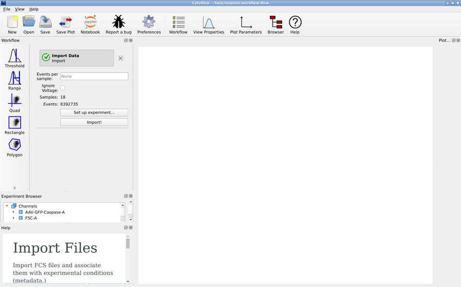
cu click 408 714; sleep 1; cu click 408 615; sleep 1; cu drag 1363 510 1050 510; sleep 2; cu screenshot /tmp/screen.png
{
"file_path": "/tmp/screen.png"
}/tmp/screen.png
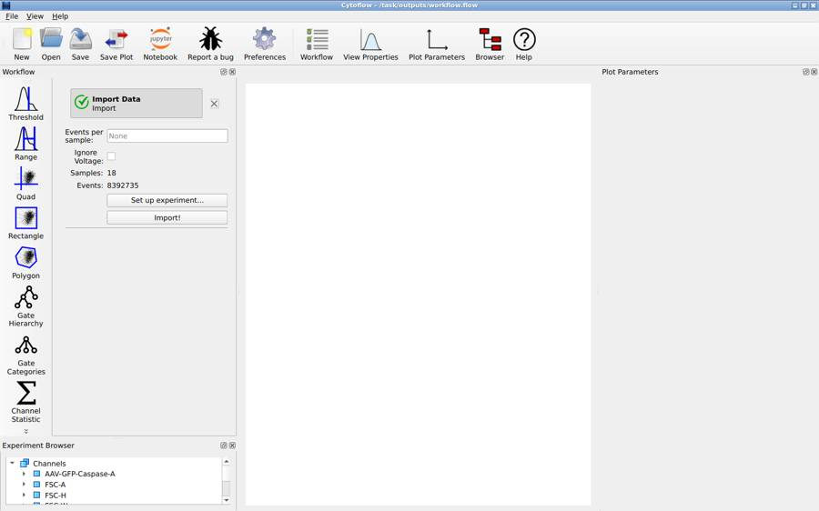
cu click 408 785; sleep 1; cu click 651 75; sleep 2; cu screenshot /tmp/screen.png
{
"file_path": "/tmp/screen.png"
}/tmp/screen.png
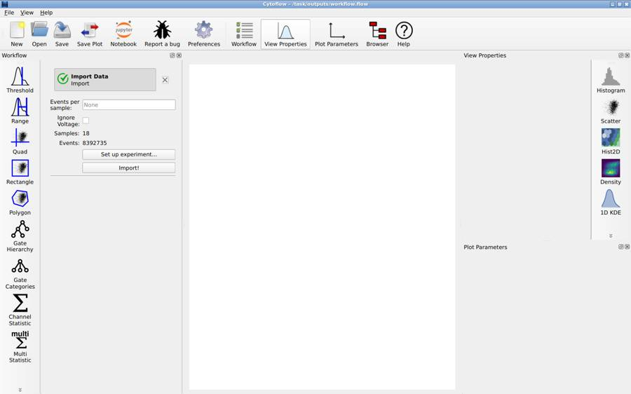
cu click 1393 385; sleep 3; cu screenshot /tmp/screen.png
{
"file_path": "/tmp/screen.png"
}/tmp/screen.png
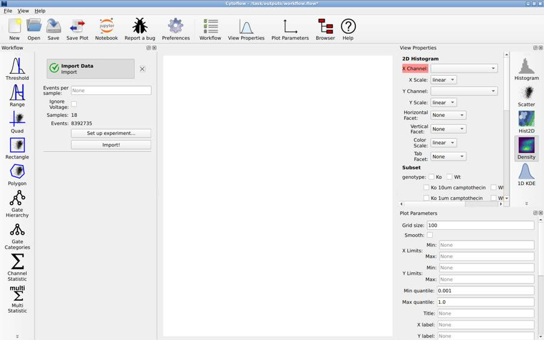
cu drag 1248 550 1248 780; sleep 1; cu click 1228 181; sleep 1; cu screenshot /tmp/screen.png
{
"file_path": "/tmp/screen.png"
}/tmp/screen.png
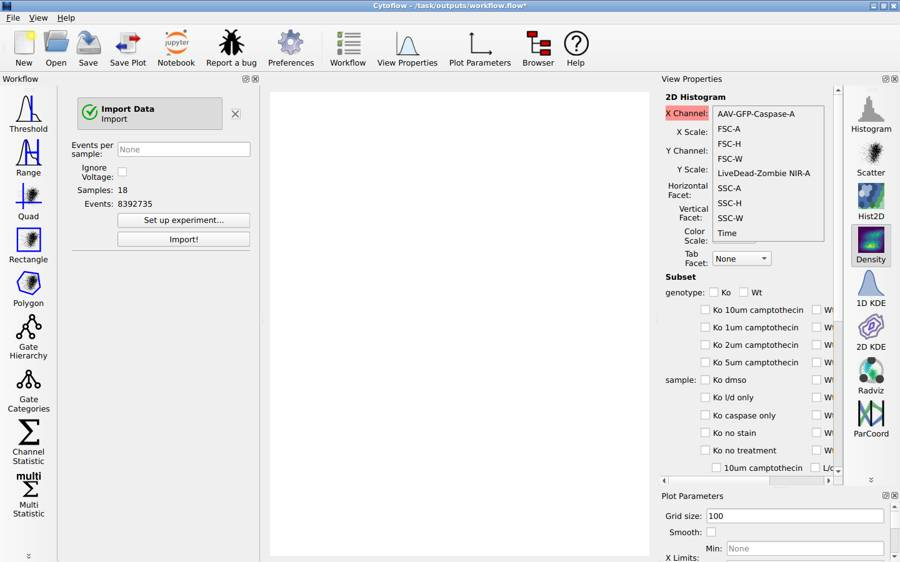
cu click 1166 206; sleep 1; cu click 1228 241; sleep 1; cu screenshot /tmp/screen.png
{
"file_path": "/tmp/screen.png"
}/tmp/screen.png
cu click 1166 361; sleep 20; cu screenshot /tmp/screen.png
{
"file_path": "/tmp/screen.png"
}/tmp/screen.png
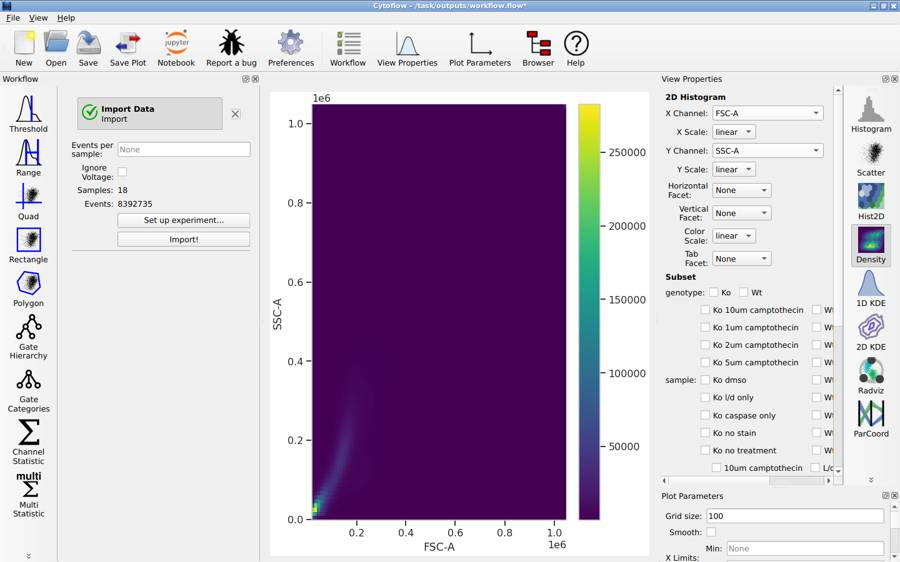
cu click 1174 211; sleep 1; cu screenshot /tmp/screen.png
{
"file_path": "/tmp/screen.png"
}/tmp/screen.png
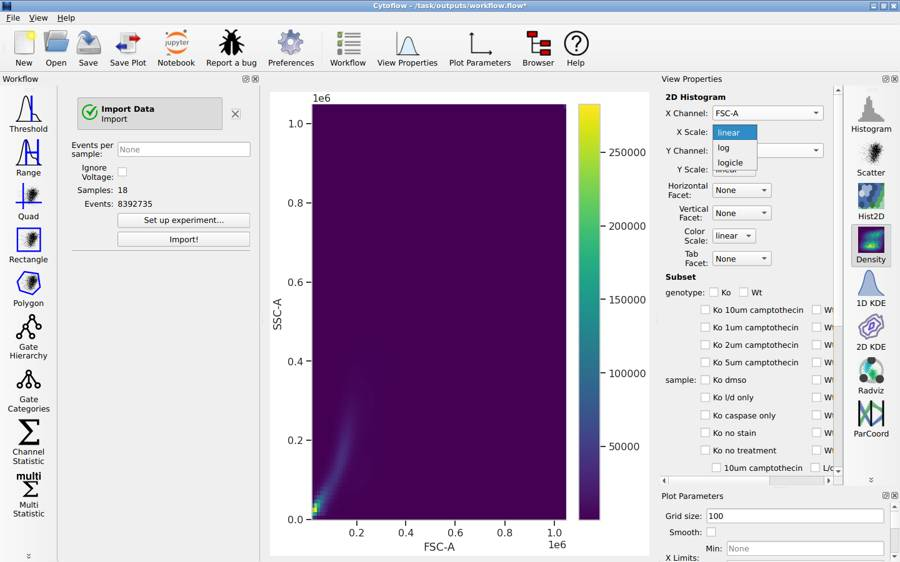
cu click 1158 237; sleep 12; cu click 1174 271; sleep 1; cu click 1158 297; sleep 12; cu click 1174 378; sleep 1; cu click 1158 404; sleep 20; cu screenshot /tmp/screen.png
{
"file_path": "/tmp/screen.png"
}/tmp/screen.png
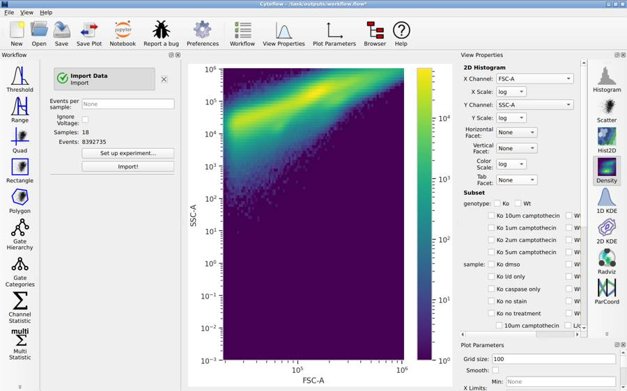
cu drag 1248 783 1248 600; sleep 1; cu screenshot /tmp/screen.png
{
"file_path": "/tmp/screen.png"
}/tmp/screen.png
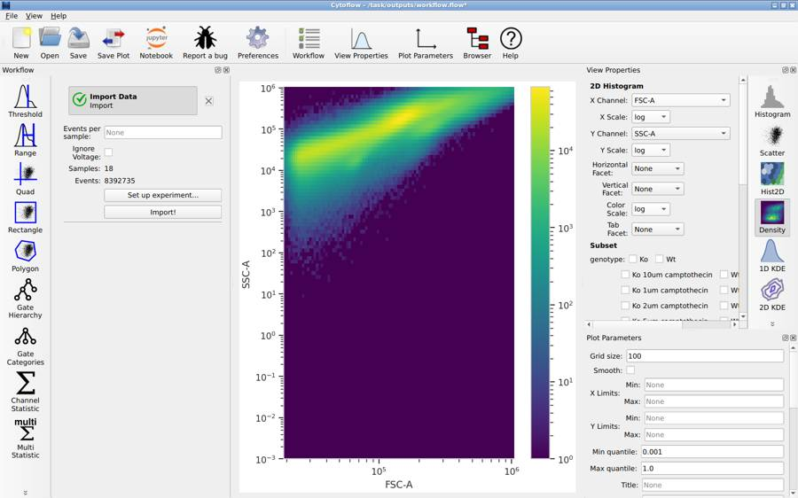
cu click 1287 756; cu type "1000"; cu key Return; sleep 20; cu screenshot /tmp/screen.png
{
"file_path": "/tmp/screen.png"
}/tmp/screen.png
cu click 45 460; sleep 3; cu screenshot /tmp/screen.png
{
"file_path": "/tmp/screen.png"
}/tmp/screen.png
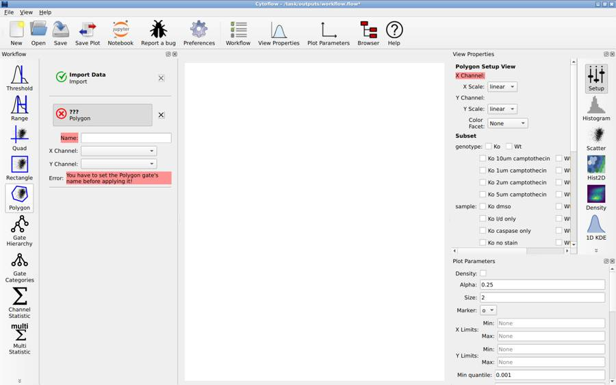
cu click 294 322; cu type "cells"; cu key Return; sleep 1; cu click 1129 639; sleep 1; cu click 1174 203; sleep 1; cu click 1158 229; sleep 1; cu click 1174 255; sleep 1; cu click 1158 281; sleep 1; cu click 277 353; sleep 1; cu screenshot /tmp/screen.png
{
"file_path": "/tmp/screen.png"
}/tmp/screen.png
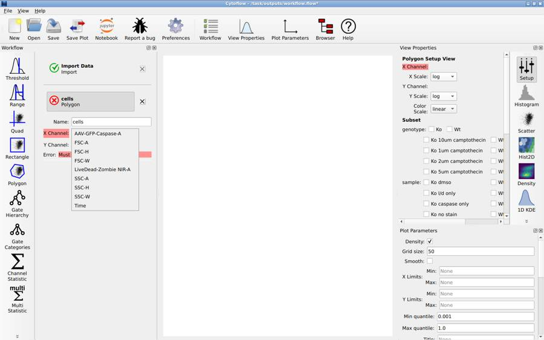
cu click 215 377; sleep 1; cu click 277 383; sleep 1; cu click 215 503; sleep 1; cu click 1174 289; sleep 1; cu click 1158 315; sleep 1; cu click 1287 778; cu type "1000"; cu key Return; sleep 25; cu screenshot /tmp/screen.png
{
"file_path": "/tmp/screen.png"
}/tmp/screen.png
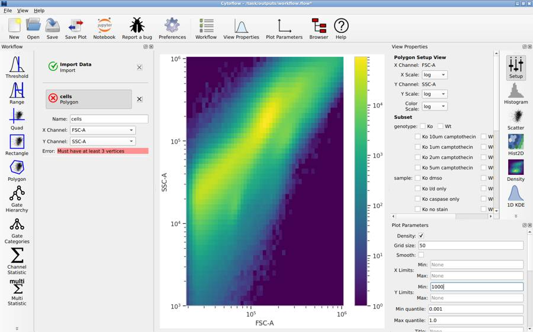
for p in "650 420" "640 330" "690 225" "790 200" "860 230" "850 330" "770 420"; do cu click $p; sleep 0.7; done; cu click 700 450 double; sleep 25; cu screenshot /tmp/screen.png
{
"file_path": "/tmp/screen.png"
}/tmp/screen.png
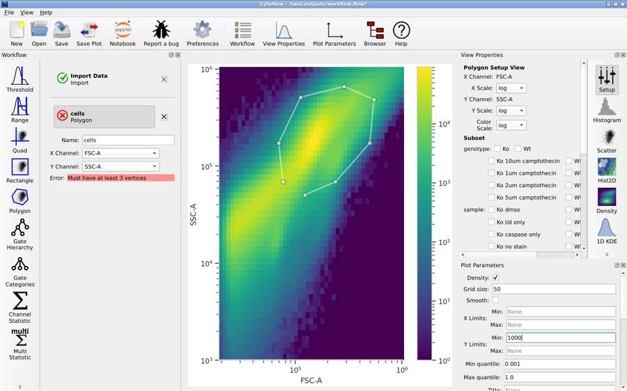
cu click 650 419; sleep 25; cu screenshot /tmp/screen.png
{
"file_path": "/tmp/screen.png"
}/tmp/screen.png
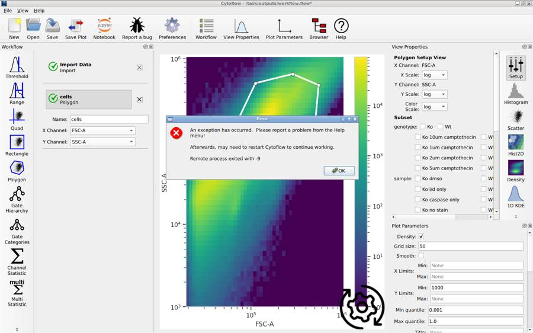
free -m; ps aux --sort=-rss | head -8; cat /sys/fs/cgroup/memory.max 2>/dev/null; cat /sys/fs/cgroup/memory.events 2>/dev/null; nproc
total used free shared buff/cache available Mem: 7949 953 6857 15 378 6996 Swap: 0 0 0 USER PID %CPU %MEM VSZ RSS TTY STAT START TIME COMMAND cfapp 841 0.9 4.8 3592876 397228 ? Sl 19:13 0:04 /opt/cytoflow/cytoflow-1.3.2/cytoflow root 1020 1.2 2.6 5688524 216008 ? Sl 19:13 0:05 claude --verbose --output-format=stream-json --effort high --model claude-fable-5-2 --permission-mode=bypassPermissions --print root 815 0.0 0.5 233684 41652 ? S 19:13 0:00 Xvfb :1 -screen 0 1440x900x24 -nolisten tcp root 828 0.0 0.2 58956 23184 ? S 19:13 0:00 /usr/bin/python3 /usr/bin/websockify --web=/usr/share/novnc 6080 localhost:5900 cfapp 859 0.0 0.2 84344 22088 ? S 19:13 0:00 /opt/cytoflow/cytoflow-1.3.2/cytoflow -B -S -I -c from multiprocessing.resource_tracker import main;main(9) cfapp 927 0.0 0.2 5238908 19544 ? Sl 19:13 0:00 /opt/cytoflow/cytoflow-1.3.2/_internal/PyQt5/Qt5/libexec/QtWebEngineProcess --type=zygote --application-name=cytoflow --webengine-schemes=qrc:sLV --lang=en agent 834 0.0 0.1 143096 11748 ? Sl 19:13 0:00 openbox 4
dmesg 2>&1 | tail -5; ps -ef | grep -v "ps -ef" | head -40; whoami; ls /sys/fs/cgroup/ 2>/dev/null | head; cat /sys/fs/cgroup/memory/memory.limit_in_bytes 2>/dev/null
Exit code 1 [ 450.177677] [ 1020] 0 1020 1422131 41190 41188 2 0 1208320 0 0 claude [ 450.177724] [ 1454] 0 1454 1224 93 91 2 0 49152 0 0 bash [ 450.177768] [ 1458] 0 1458 784 29 28 1 0 45056 0 0 sleep [ 450.177812] oom-kill:constraint=CONSTRAINT_NONE,nodemask=(null),cpuset=/,mems_allowed=0,global_oom,task_memcg=/,task=cytoflow,pid=861,uid=1002 [ 450.177907] Out of memory: Killed process 861 (cytoflow) total-vm:9109568kB, anon-rss:7301524kB, file-rss:8kB, shmem-rss:28kB, UID:1002 pgtables:14956kB oom_score_adj:0 UID PID PPID C STIME TTY TIME CMD root 1 0 0 19:13 ? 00:00:00 /__modal/runch-agent root 2 0 0 19:13 ? 00:00:00 [kthreadd] root 3 2 0 19:13 ? 00:00:00 [pool_workqueue_release] root 4 2 0 19:13 ? 00:00:00 [kworker/R-rcu_gp] root 5 2 0 19:13 ? 00:00:00 [kworker/R-sync_wq] root 6 2 0 19:13 ? 00:00:00 [kworker/R-kvfree_rcu_reclaim] root 7 2 0 19:13 ? 00:00:00 [kworker/R-slub_flushwq] root 8 2 0 19:13 ? 00:00:00 [kworker/R-netns] root 9 2 0 19:13 ? 00:00:00 [kworker/0:0-events] root 10 2 0 19:13 ? 00:00:00 [kworker/0:0H-kblockd] root 11 2 0 19:13 ? 00:00:00 [kworker/0:1-events] root 12 2 0 19:13 ? 00:00:00 [kworker/u16:0-ext4-rsv-conversion] root 13 2 0 19:13 ? 00:00:00 [kworker/R-mm_percpu_wq] root 14 2 0 19:13 ? 00:00:00 [ksoftirqd/0] root 15 2 0 19:13 ? 00:00:00 [rcu_sched] root 16 2 0 19:13 ? 00:00:00 [rcu_exp_par_gp_kthread_worker/0] root 17 2 0 19:13 ? 00:00:00 [rcu_exp_gp_kthread_worker] root 18 2 0 19:13 ? 00:00:00 [migration/0] root 19 2 0 19:13 ? 00:00:00 [cpuhp/0] root 20 2 0 19:13 ? 00:00:00 [cpuhp/1] root 21 2 0 19:13 ? 00:00:00 [migration/1] root 22 2 0 19:13 ? 00:00:00 [ksoftirqd/1] root 23 2 0 19:13 ? 00:00:00 [kworker/1:0-events] root 24 2 0 19:13 ? 00:00:00 [kworker/1:0H-kblockd] root 25 2 0 19:13 ? 00:00:00 [cpuhp/2] root 26 2 0 19:13 ? 00:00:00 [migration/2] root 27 2 0 19:13 ? 00:00:00 [ksoftirqd/2] root 28 2 0 19:13 ? 00:00:00 [kworker/2:0-events] root 29 2 0 19:13 ? 00:00:00 [kworker/2:0H-kblockd] root 30 2 0 19:13 ? 00:00:00 [cpuhp/3] root 31 2 0 19:13 ? 00:00:00 [migration/3] root 32 2 0 19:13 ? 00:00:00 [ksoftirqd/3] root 33 2 0 19:13 ? 00:00:00 [kworker/3:0-events] root 34 2 0 19:13 ? 00:00:00 [kworker/3:0H-kblockd] root 36 2 0 19:13 ? 00:00:00 [kworker/u16:1-events_unbound] root 37 2 0 19:13 ? 00:00:00 [kworker/u16:2-events_unbound] root 39 2 0 19:13 ? 00:00:00 [kdevtmpfs] root 40 2 0 19:13 ? 00:00:00 [kworker/R-inet_frag_wq] root 41 2 0 19:13 ? 00:00:00 [rcu_tasks_kthread] root cgroup.controllers cgroup.max.depth cgroup.max.descendants cgroup.pressure cgroup.procs cgroup.stat cgroup.subtree_control cgroup.threads cpu.pressure cpu.stat
ps -eo pid,ppid,user,rss,etime,args | grep -v "\[" | grep -v "ps -eo"; ls /opt/cytoflow/ ; ls /usr/local/bin/
PID PPID USER RSS ELAPSED COMMAND
1 0 root 508 08:20 /__modal/runch-agent
809 1 root 300 08:20 /usr/bin/tini -- /entrypoint.sh sh -c sleep infinity
810 809 root 296 08:20 /bin/bash /entrypoint.sh sh -c sleep infinity
815 810 root 41652 08:20 Xvfb :1 -screen 0 1440x900x24 -nolisten tcp
825 810 root 288 08:20 /bin/bash /entrypoint.sh sh -c sleep infinity
826 810 root 9472 08:20 x11vnc -display :1 -forever -shared -nopw -quiet -rfbport 5900
827 825 root 332 08:20 runuser -u agent -- env DISPLAY=:1 HOME=/home/agent LANG=C.UTF-8 LC_ALL=C.UTF-8 openbox
828 810 root 23184 08:20 /usr/bin/python3 /usr/bin/websockify --web=/usr/share/novnc 6080 localhost:5900
832 810 root 292 08:20 /bin/bash /entrypoint.sh sh -c sleep infinity
833 832 root 328 08:20 runuser -u cfapp -- env DISPLAY=:1 HOME=/home/cfapp XDG_RUNTIME_DIR=/tmp/runtime-cfapp LANG=C.UTF-8 LC_ALL=C.UTF-8 bash -c umask 002; cd /task; exec start-cytoflow
834 827 agent 11748 08:20 openbox
835 833 cfapp 284 08:20 /bin/bash /usr/local/bin/start-cytoflow
841 835 cfapp 397228 08:20 /opt/cytoflow/cytoflow-1.3.2/cytoflow
859 841 cfapp 22088 08:17 /opt/cytoflow/cytoflow-1.3.2/cytoflow -B -S -I -c from multiprocessing.resource_tracker import main;main(9)
889 841 cfapp 7488 08:14 /opt/cytoflow/cytoflow-1.3.2/_internal/PyQt5/Qt5/libexec/QtWebEngineProcess --type=zygote --no-zygote-sandbox --application-name=cytoflow --webengine-schemes=qrc:sLV --lang=en
910 841 cfapp 7500 08:14 /opt/cytoflow/cytoflow-1.3.2/_internal/PyQt5/Qt5/libexec/QtWebEngineProcess --type=zygote --application-name=cytoflow --webengine-schemes=qrc:sLV --lang=en
912 910 cfapp 7504 08:14 /opt/cytoflow/cytoflow-1.3.2/_internal/PyQt5/Qt5/libexec/QtWebEngineProcess --type=zygote --application-name=cytoflow --webengine-schemes=qrc:sLV --lang=en
927 912 cfapp 19800 08:14 /opt/cytoflow/cytoflow-1.3.2/_internal/PyQt5/Qt5/libexec/QtWebEngineProcess --type=zygote --application-name=cytoflow --webengine-schemes=qrc:sLV --lang=en
1018 1 root 344 08:05 su root -s /bin/bash -c set -o pipefail; export PATH=$HOME/.local/bin:$PATH; cd /task; IS_SANDBOX=1 CLAUDE_CODE_MAX_OUTPUT_TOKENS=128000 ANTHROPIC_MODEL=claude-fable-5-2 CLAUDE_CODE_EFFORT_LEVEL=high claude --verbose --output-format=stream-json --effort high --model claude-fable-5-2 --permission-mode=bypassPermissions --print < /tmp/instruction.md > /logs/agent/claude-code.txt 2>&1; echo exit=$?
1019 1018 root 276 08:05 bash -c set -o pipefail; export PATH=$HOME/.local/bin:$PATH; cd /task; IS_SANDBOX=1 CLAUDE_CODE_MAX_OUTPUT_TOKENS=128000 ANTHROPIC_MODEL=claude-fable-5-2 CLAUDE_CODE_EFFORT_LEVEL=high claude --verbose --output-format=stream-json --effort high --model claude-fable-5-2 --permission-mode=bypassPermissions --print < /tmp/instruction.md > /logs/agent/claude-code.txt 2>&1; echo exit=$?
1020 1019 root 224916 08:05 claude --verbose --output-format=stream-json --effort high --model claude-fable-5-2 --permission-mode=bypassPermissions --print
cytoflow-1.3.2
cu
start-cytoflowcat /usr/local/bin/start-cytoflow; cat /entrypoint.sh
#!/bin/bash
# Launch Cytoflow full-screen-ish; restart it if the agent closes it.
BIN=$(find /opt/cytoflow -maxdepth 3 -type f -name 'cytoflow' -perm -u+x | head -1)
[ -z "$BIN" ] && { echo "cytoflow binary not found under /opt/cytoflow"; exit 1; }
while true; do
"$BIN" >/tmp/cytoflow.log 2>&1
sleep 1
done
#!/bin/bash
# Starts: virtual screen -> window manager -> VNC/noVNC (for human viewing) -> Cytoflow.
set -e
# Locale must reach the GUI process explicitly (Modal does not propagate image ENV through runuser);
# without it Qt pops "failed to create compose table" and swallows keystrokes.
export LANG=C.UTF-8 LC_ALL=C.UTF-8
if [ "${OFFLINE:-1}" = "1" ]; then
# Block all outbound traffic except replies to inbound connections (so noVNC viewing still works).
if iptables -P OUTPUT DROP 2>/dev/null; then
iptables -A OUTPUT -o lo -j ACCEPT
iptables -A OUTPUT -m state --state ESTABLISHED,RELATED -j ACCEPT
echo "[env] offline mode: outbound network blocked"
else
echo "[env] WARNING: could not block network (run with --cap-add NET_ADMIN)"
fi
fi
# Bind-mounted outputs folder: make it writable by both the agent and the Cytoflow user.
chown agent:task /task/outputs 2>/dev/null; chmod 2777 /task/outputs 2>/dev/null || true
as_agent() { runuser -u agent -- env DISPLAY=$DISPLAY HOME=/home/agent LANG=$LANG LC_ALL=$LC_ALL "$@"; }
Xvfb $DISPLAY -screen 0 $SCREEN_GEOMETRY -nolisten tcp &
for i in $(seq 1 50); do xdpyinfo -display $DISPLAY >/dev/null 2>&1 && break; sleep 0.2; done
as_agent openbox &
x11vnc -display $DISPLAY -forever -shared -nopw -quiet -rfbport 5900 &
websockify --web=/usr/share/novnc 6080 localhost:5900 >/dev/null 2>&1 &
echo "[env] watch the screen at http://localhost:6080/vnc.html?autoconnect=1&resize=scale"
as_cfapp() { runuser -u cfapp -- env DISPLAY=$DISPLAY HOME=/home/cfapp XDG_RUNTIME_DIR=/tmp/runtime-cfapp LANG=$LANG LC_ALL=$LC_ALL "$@"; }
mkdir -p /tmp/runtime-cfapp && chown cfapp /tmp/runtime-cfapp && chmod 700 /tmp/runtime-cfapp
# umask 002: files Cytoflow saves into /task/outputs stay readable/writable by the agent.
# cd /task: Cytoflow's open/save dialogs start in the task folder.
as_cfapp bash -c "umask 002; cd /task; exec start-cytoflow" &
waitnohup bash -c 'while true; do echo "$(date +%T) $(ps -eo rss,pid,args | grep "[c]ytoflow-1.3.2/cytoflow" | awk "{printf \"%d:%dMB \", \$2, \$1/1024}") free=$(free -m | awk "/Mem/{print \$7}")"; sleep 2; done' > /tmp/mem.log 2>&1 &
sleep 1; cu click 915 461; sleep 1; cu key ctrl+s; sleep 2; cu screenshot /tmp/screen.png; tail -2 /tmp/mem.log; ls -la /task/outputs{
"file_path": "/tmp/screen.png"
}/tmp/screen.png 19:22:00 841:388MB 859:21MB free=7000 19:22:02 841:389MB 859:21MB free=7000 total 32 drwxrwsrwx 2 agent task 4096 Nov 10 19:15 . drwxr-xr-x 4 root root 4096 Nov 5 22:25 .. -rw-rw-r-- 1 cfapp task 23324 Nov 10 19:22 workflow.flow
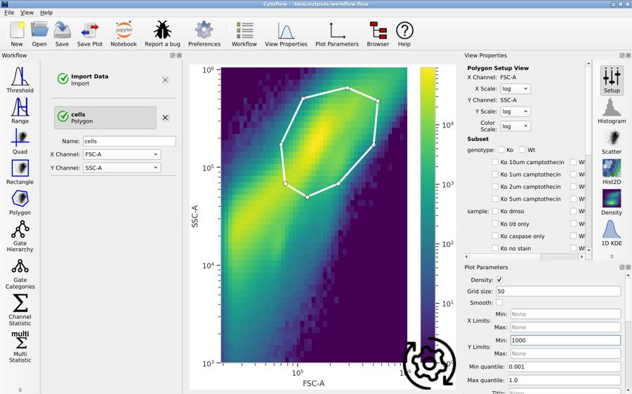
cd /task/outputs; grep -n "" workflow.flow | sed -n '1,12p;118,400p' | grep -v "tube\|conditions:\|well:\|sample:\|genotype:\|treatment:\|file:" | head -150
1:- !workflow-item;5 2: channels: 3: - AAV-GFP-Caspase-A 4: - FSC-A 5: - FSC-H 6: - FSC-W 7: - LiveDead-Zombie NIR-A 8: - SSC-A 9: - SSC-H 10: - SSC-W 11: - Time 118: - 7 119: - 8 120: - 0 121: - 1 122: - 2 123: - 3 124: - 4 125: - 5 126: - 15 127: - 16 128: - 17 129: - 9 130: - 10 131: - 11 132: - 12 133: - 13 134: - 14 135: current_view: &id001 !density-view;2 136: current_plot: null 137: huescale: log 138: plot_params: !density-view-params;2 139: col_wrap: null 140: despine: true 141: gridsize: 100 142: huelabel: '' 143: legend: true 144: legend_loc: upper right 145: margin_titles: false 146: max_quantile: 1.0 147: min_quantile: 0.001 148: palette: '' 149: sharex: true 150: sharey: true 151: smoothed: false 152: smoothed_sigma: 1.0 153: sns_context: notebook 154: sns_style: whitegrid 155: title: '' 156: xlabel: '' 157: xlim: &id002 !!python/tuple 158: - null 159: - null 160: ylabel: '' 161: ylim: !!python/tuple 162: - 1000.0 163: - null 164: plotfacet: '' 165: subset_list: 166: - !category-subset;1 167: name: genotype 168: selected: [] 169: values: 170: - KO 171: - WT 172: - !category-subset;1 173: name: sample 174: selected: [] 175: values: 176: - KO 10uM camptothecin 177: - KO 1uM camptothecin 178: - KO 2uM camptothecin 179: - KO 5uM camptothecin 180: - KO DMSO 181: - KO L/D only 182: - KO caspase only 183: - KO no stain 184: - KO no treatment 185: - WT 10uM camptothecin 186: - WT 1uM camptothecin 187: - WT 2uM camptothecin 188: - WT 5uM camptothecin 189: - WT DMSO 190: - WT L/D only 191: - WT caspase only 192: - WT no stain 193: - WT no treatment 194: - !category-subset;1 195: name: treatment 196: selected: [] 197: values: 198: - 10uM camptothecin 199: - 1uM camptothecin 200: - 2uM camptothecin 201: - 5uM camptothecin 202: - DMSO 203: - L/D only 204: - caspase only 205: - no stain 206: - no treatment 207: - !category-subset;1 208: name: well 209: selected: [] 210: values: 211: - A10 212: - A11 213: - A12 214: - A2 215: - A4 216: - A6 217: - A7 218: - A8 219: - A9 220: - B10 221: - B11 222: - B12 223: - B2 224: - B4 225: - B6 226: - B7 227: - B8 228: - B9 229: xchannel: FSC-A 230: xfacet: '' 231: xscale: log 232: ychannel: SSC-A 233: yfacet: '' 234: yscale: log 235: metadata: 236: AAV-GFP-Caspase-A: 237: fcs_name: AAV-GFP-Caspase-A 238: range: 1048576.0 239: type: channel 240: voltage: '250' 241: FSC-A: 242: fcs_name: FSC-A 243: range: 1048576.0 244: type: channel 245: voltage: '30' 246: FSC-H: 247: fcs_name: FSC-H 248: range: 1048576.0 249: type: channel 250: voltage: '30' 251: FSC-W: 252: fcs_name: FSC-W 253: range: 1024.0 254: type: channel 255: voltage: '30' 256: LiveDead-Zombie NIR-A:
cu click 21 29; sleep 1; cu click 47 196; sleep 3; cu screenshot /tmp/screen.png; tail -3 /tmp/mem.log
{
"file_path": "/tmp/screen.png"
}/tmp/screen.png 19:22:12 841:389MB 859:21MB free=6985 19:22:14 841:389MB 859:21MB free=6986 19:22:16 free=7302

thinking
Cytoflow ran out of memory on this 8 GB machine with 8.4M events, so I saved the workflow with the `cells` gate and am restarting the app. Once it reloads, I'll limit plots to single wells to stay within memory.
sleep 15; cu screenshot /tmp/screen.png; tail -2 /tmp/mem.log
{
"file_path": "/tmp/screen.png"
}/tmp/screen.png 19:22:36 1630:513MB 1653:38MB 1655:306MB free=6764 19:22:38 1630:513MB 1653:38MB 1655:306MB free=6766

cu click 700 9 double; sleep 2; cu click 89 75; sleep 2; cu click 1038 744; cu screenshot /tmp/screen.png
{
"file_path": "/tmp/screen.png"
}/tmp/screen.png

cu click 707 576; cu paste "/task/outputs/workflow.flow"; sleep 0.5; cu key Return; sleep 3; cu screenshot /tmp/screen.png
{
"file_path": "/tmp/screen.png"
}/tmp/screen.png
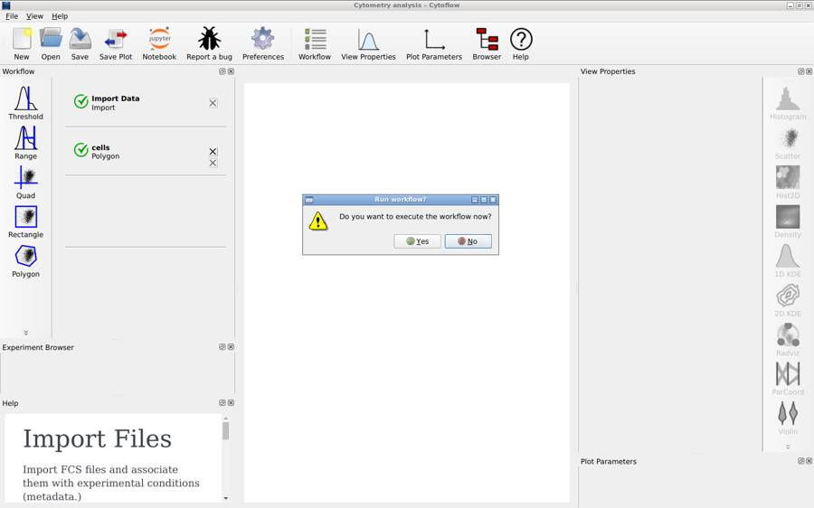
cu click 738 427; sleep 60; tail -32 /tmp/mem.log | awk 'NR%2==0'; cu screenshot /tmp/screen.png
{
"file_path": "/tmp/screen.png"
}19:23:06 1630:516MB 1653:38MB 1655:319MB free=6755 19:23:10 1630:514MB 1653:38MB 1655:1610MB free=5376 19:23:14 1630:516MB 1653:38MB 1655:1497MB free=5479 19:23:18 1630:516MB 1653:38MB 1655:1497MB free=5536 19:23:22 1630:516MB 1653:38MB 1655:1497MB free=5558 19:23:26 1630:516MB 1653:38MB 1655:1497MB free=5577 19:23:30 1630:516MB 1653:38MB 1655:1497MB free=5592 19:23:34 1630:516MB 1653:38MB 1655:1497MB free=5598 19:23:38 1630:516MB 1653:38MB 1655:1497MB free=5601 19:23:42 1630:516MB 1653:38MB 1655:1497MB free=5601 19:23:46 1630:516MB 1653:38MB 1655:1497MB free=5603 19:23:50 1630:516MB 1653:38MB 1655:1497MB free=5602 19:23:54 1630:516MB 1653:38MB 1655:1497MB free=5603 19:23:58 1630:516MB 1653:38MB 1655:1497MB free=5603 19:24:02 1630:516MB 1653:38MB 1655:1497MB free=5603 19:24:06 1630:516MB 1653:38MB 1655:1497MB free=5603 /tmp/screen.png
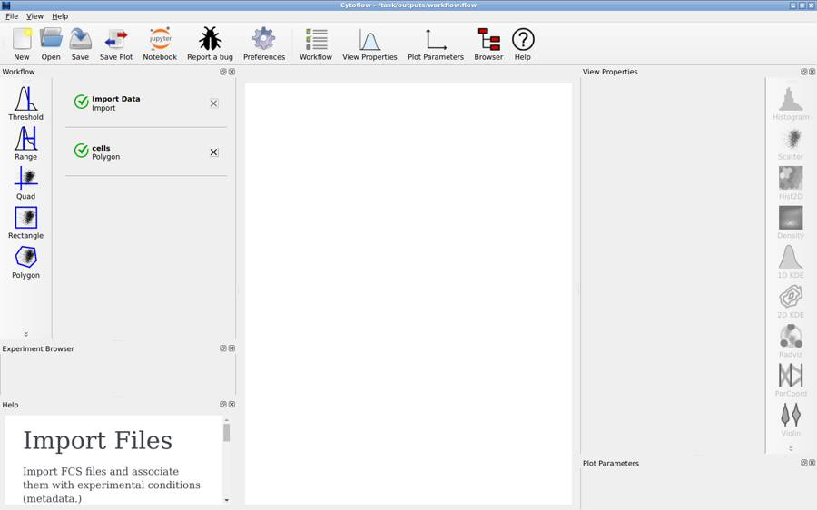
cu click 408 714; sleep 1; cu click 408 785; sleep 1; cu drag 1021 510 1050 510; sleep 1; cu click 258 268; sleep 30; tail -16 /tmp/mem.log | awk 'NR%2==0'; cu screenshot /tmp/screen.png
{
"file_path": "/tmp/screen.png"
}19:24:18 1630:527MB 1653:38MB 1655:2337MB free=4702 19:24:22 1630:356MB 1653:21MB 1655:3953MB free=3023 19:24:26 1630:357MB 1653:21MB 1655:7103MB free=107 19:24:30 1630:368MB 1653:21MB 1655:1411MB free=5559 19:24:34 1630:369MB 1653:21MB 1655:1411MB free=5564 19:24:38 1630:369MB 1653:21MB 1655:1411MB free=5593 19:24:42 1630:369MB 1653:21MB 1655:1411MB free=5593 19:24:46 1630:369MB 1653:21MB 1655:1411MB free=5592 /tmp/screen.png
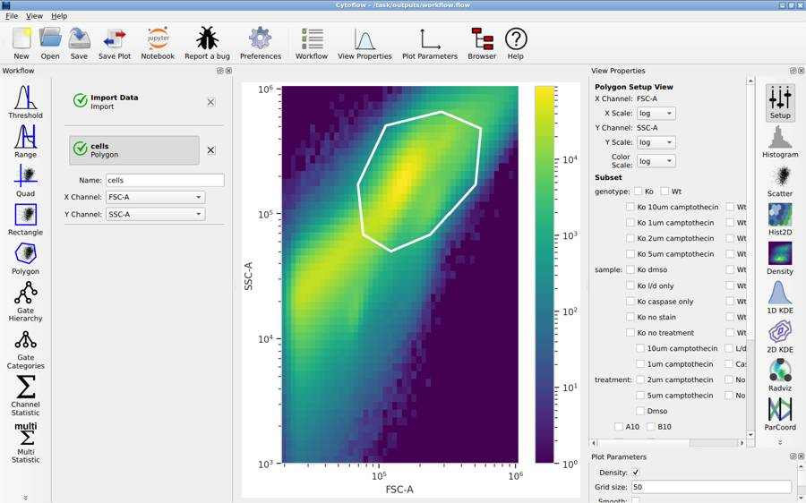
cu drag 1050 510 930 510; sleep 12; tail -3 /tmp/mem.log; cu screenshot /tmp/screen.png
{
"file_path": "/tmp/screen.png"
}19:25:07 1630:375MB 1653:21MB 1655:1412MB free=5584 19:25:09 1630:375MB 1653:21MB 1655:1412MB free=5584 19:25:11 1630:375MB 1653:21MB 1655:1412MB free=5583 /tmp/screen.png
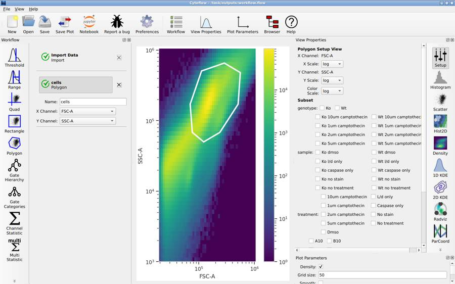
cu click 1182 707; sleep 15; tail -8 /tmp/mem.log; cu screenshot /tmp/screen.png
{
"file_path": "/tmp/screen.png"
}19:25:17 1630:375MB 1653:21MB 1655:1412MB free=5580 19:25:19 1630:378MB 1653:21MB 1655:1412MB free=5581 19:25:21 1630:378MB 1653:21MB 1655:1414MB free=5448 19:25:23 1630:378MB 1653:21MB 1655:1414MB free=5456 19:25:25 1630:378MB 1653:21MB 1655:1414MB free=5473 19:25:27 1630:378MB 1653:21MB 1655:1414MB free=5481 19:25:29 1630:378MB 1653:21MB 1655:1414MB free=5489 19:25:31 1630:378MB 1653:21MB 1655:1414MB free=5497 /tmp/screen.png
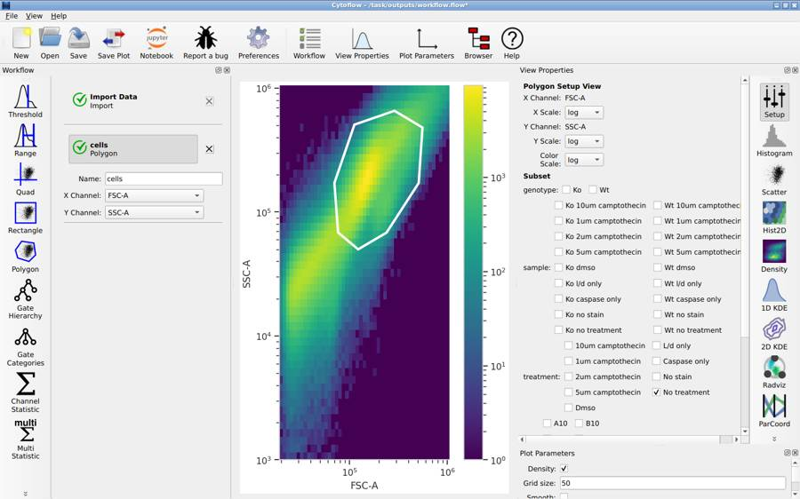
cu click 45 460; sleep 3; cu click 294 409; cu type "singlets"; cu key Return; sleep 1; cu screenshot /tmp/screen.png
{
"file_path": "/tmp/screen.png"
}/tmp/screen.png
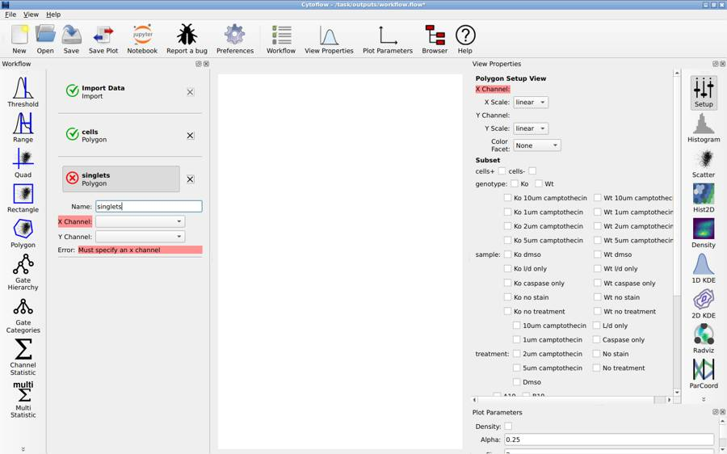
cu click 1006 845; sleep 1; cu click 994 339; sleep 1; cu click 1182 729; sleep 1; cu click 1023 645; sleep 1; cu click 277 439; sleep 1; cu click 215 463; sleep 1; cu click 277 469; sleep 1; cu click 215 517; sleep 15; tail -4 /tmp/mem.log; cu screenshot /tmp/screen.png
{
"file_path": "/tmp/screen.png"
}19:26:09 1630:389MB 1653:21MB 1655:1432MB free=5463 19:26:11 1630:389MB 1653:21MB 1655:1432MB free=5478 19:26:13 1630:389MB 1653:21MB 1655:1432MB free=5494 19:26:15 1630:389MB 1653:21MB 1655:1432MB free=5502 /tmp/screen.png
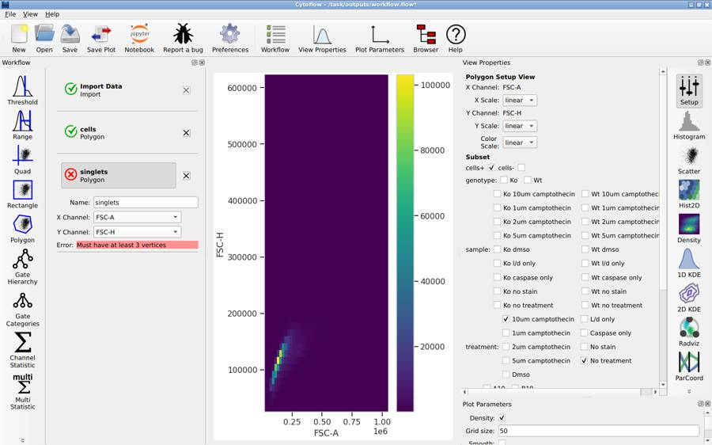
cu click 1050 203; sleep 1; cu click 1034 229; sleep 6; cu click 1050 255; sleep 1; cu click 1034 281; sleep 6; cu click 1050 289; sleep 1; cu click 1034 315; sleep 12; tail -2 /tmp/mem.log; cu screenshot /tmp/screen.png
{
"file_path": "/tmp/screen.png"
}19:26:47 1630:389MB 1653:21MB 1655:1434MB free=5462 19:26:49 1630:389MB 1653:21MB 1655:1434MB free=5484 /tmp/screen.png
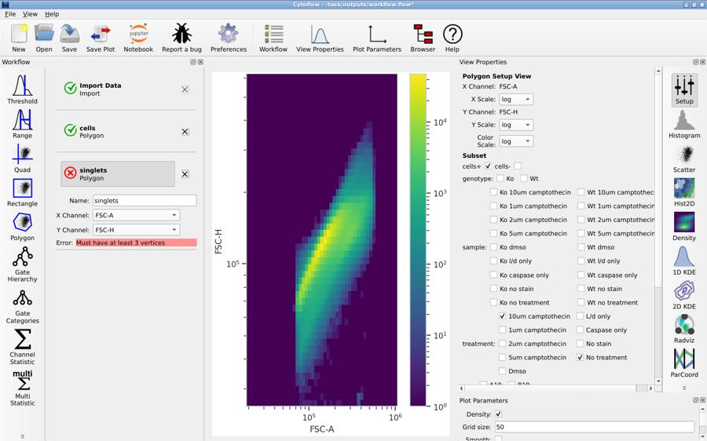
cu drag 1185 803 1185 560; sleep 2; cu screenshot /tmp/screen.png
{
"file_path": "/tmp/screen.png"
}/tmp/screen.png
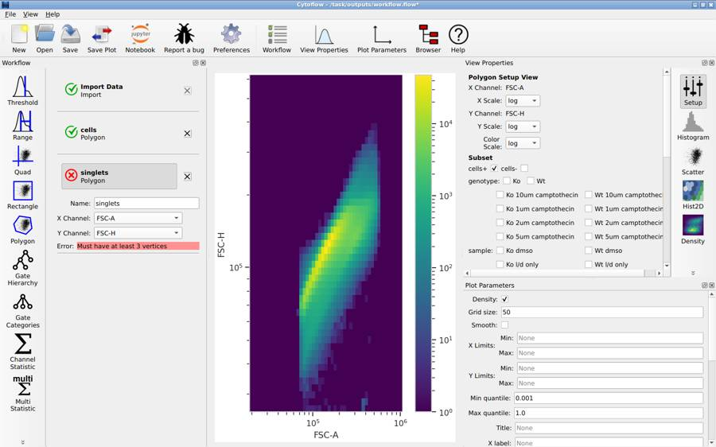
cu click 1050 203; sleep 1; cu click 1034 204; sleep 5; cu click 1050 255; sleep 1; cu click 1034 256; sleep 5; cu click 1225 681; cu type "0"; cu key Return; sleep 4; cu click 1225 711; cu type "600000"; cu key Return; sleep 4; cu click 1225 742; cu type "0"; cu key Return; sleep 4; cu click 1225 772; cu type "350000"; cu key Return; sleep 4; cu click 1210 629 double; cu key ctrl+a; cu type "100"; cu key Return; sleep 10; tail -2 /tmp/mem.log; cu screenshot /tmp/screen.png
{
"file_path": "/tmp/screen.png"
}19:27:55 1630:390MB 1653:21MB 1655:1437MB free=5391 19:27:57 1630:390MB 1653:21MB 1655:1437MB free=5428 /tmp/screen.png
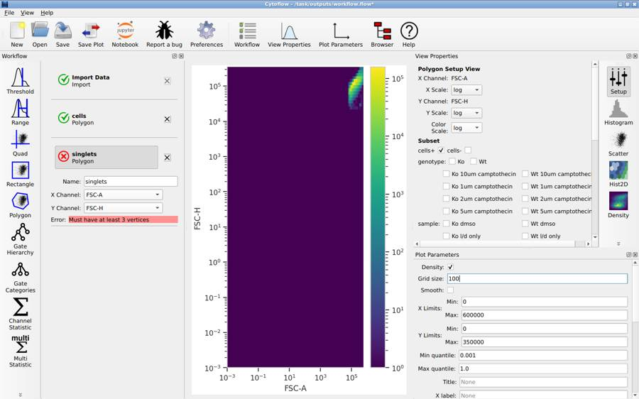
cu click 1050 203; sleep 1; cu screenshot /tmp/screen.png
{
"file_path": "/tmp/screen.png"
}/tmp/screen.png
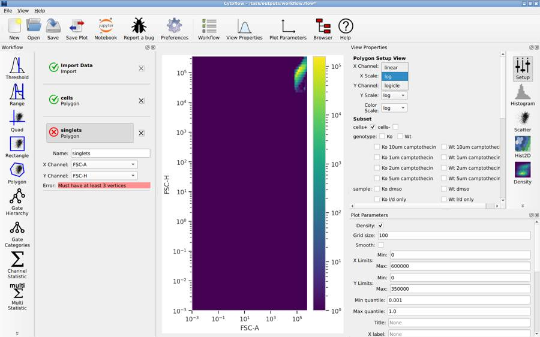
cu click 1042 180; sleep 6; cu click 1050 255; sleep 1; cu click 1042 232; sleep 12; tail -2 /tmp/mem.log; cu screenshot /tmp/screen.png
{
"file_path": "/tmp/screen.png"
}19:28:27 1630:390MB 1653:21MB 1655:1438MB free=5555 19:28:29 1630:390MB 1653:21MB 1655:1438MB free=5555 /tmp/screen.png
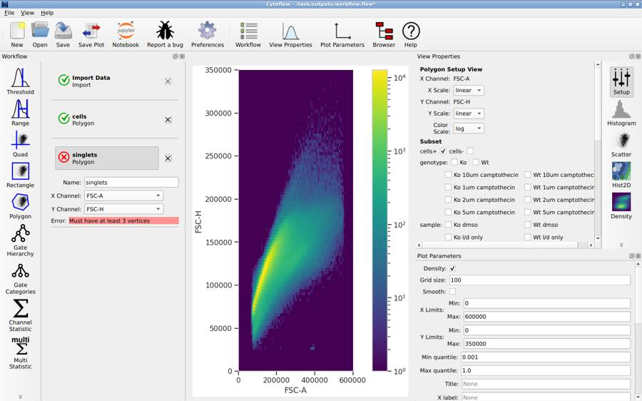
for p in "561 752" "561 702" "599 524" "663 254" "727 176" "727 302" "642 514" "599 630" "569 725"; do cu click $p; sleep 0.7; done; cu click 561 752; sleep 20; tail -6 /tmp/mem.log; cu screenshot /tmp/screen.png
{
"file_path": "/tmp/screen.png"
}19:29:08 1630:391MB 1653:21MB 1655:1462MB free=5434 19:29:10 1630:391MB 1653:21MB 1655:1462MB free=5442 19:29:12 1630:391MB 1653:21MB 1655:1462MB free=5457 19:29:14 1630:391MB 1653:21MB 1655:1462MB free=5473 19:29:16 1630:391MB 1653:21MB 1655:1462MB free=5486 19:29:18 1630:391MB 1653:21MB 1655:1462MB free=5497 /tmp/screen.png
cu key ctrl+s; sleep 2; cu click 45 250; sleep 3; cu screenshot /tmp/screen.png
{
"file_path": "/tmp/screen.png"
}/tmp/screen.png
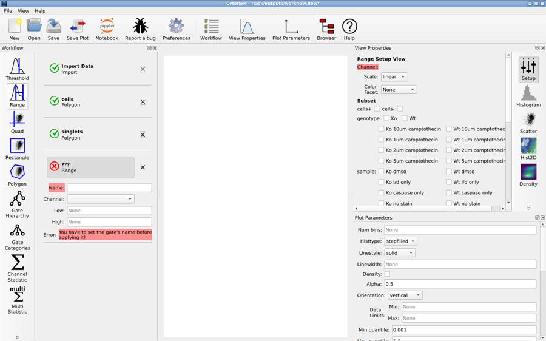
cu drag 1185 560 1185 810; sleep 1; cu click 288 495; cu type "live"; cu key Return; sleep 1; cu click 1038 203; sleep 1; cu click 1030 253; sleep 1; cu screenshot /tmp/screen.png
{
"file_path": "/tmp/screen.png"
}/tmp/screen.png
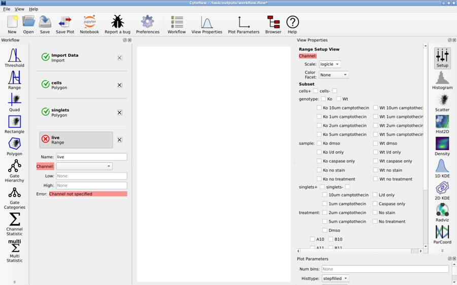
cu click 994 287; sleep 0.5; cu click 1015 590; sleep 0.5; for y in 537 508 480 565; do cu click 1183 $y; sleep 0.5; done; cu click 1050 236; sleep 1; cu screenshot /tmp/screen.png
{
"file_path": "/tmp/screen.png"
}/tmp/screen.png
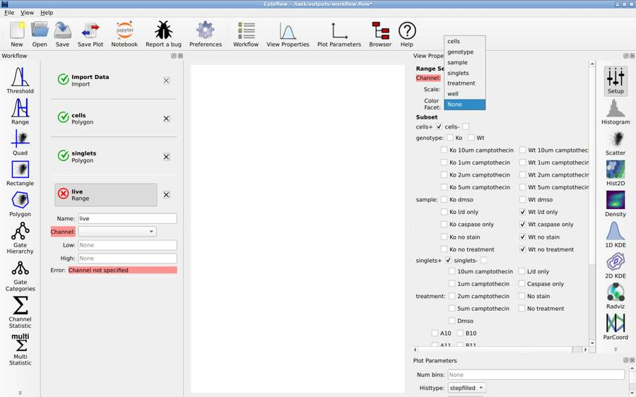
cu click 1035 141; sleep 1; cu click 265 525; sleep 1; cu screenshot /tmp/screen.png
{
"file_path": "/tmp/screen.png"
}/tmp/screen.png
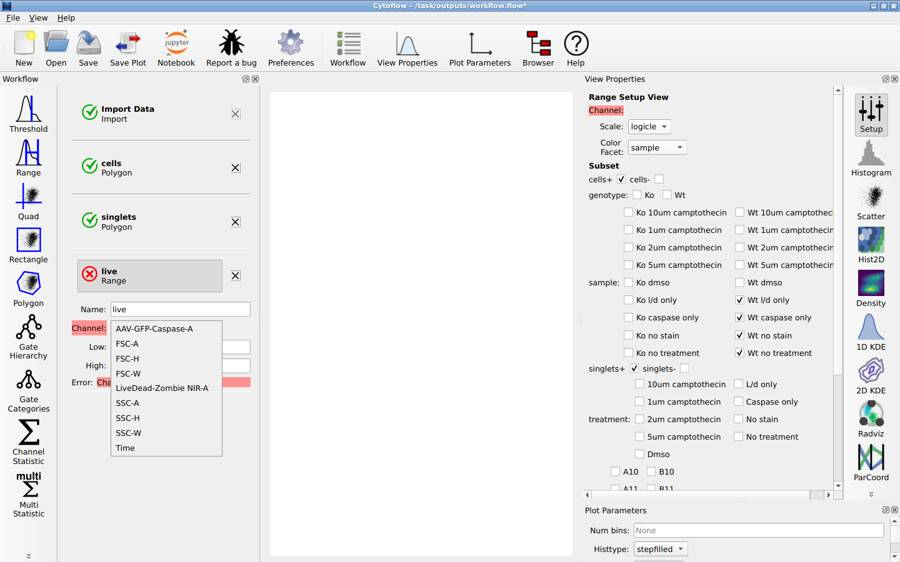
cu click 258 621; sleep 15; tail -2 /tmp/mem.log; cu screenshot /tmp/screen.png
{
"file_path": "/tmp/screen.png"
}19:30:26 1630:410MB 1653:21MB 1655:1466MB free=5492 19:30:28 1630:410MB 1653:21MB 1655:1466MB free=5498 /tmp/screen.png
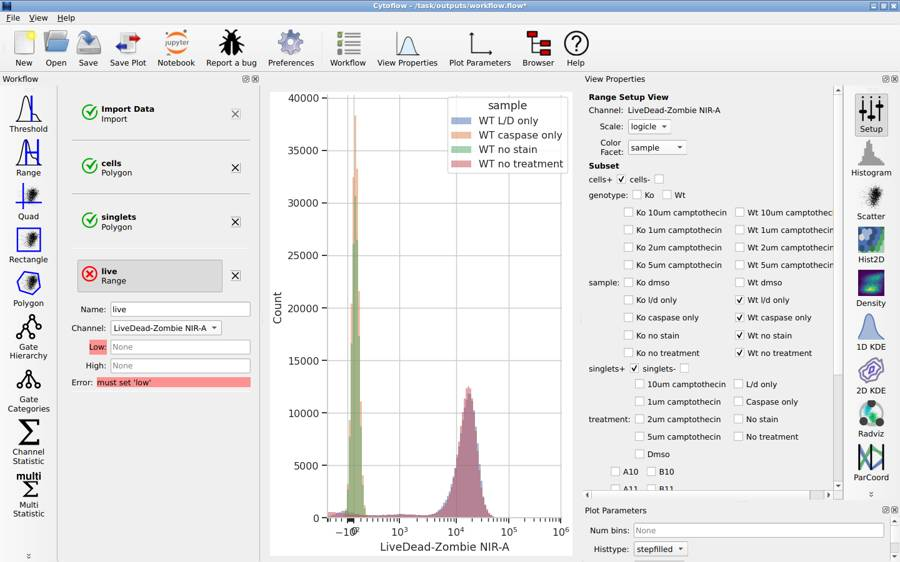
cu click 258 268; sleep 10; cu click 1393 455; sleep 3; cu screenshot /tmp/screen.png
{
"file_path": "/tmp/screen.png"
}/tmp/screen.png
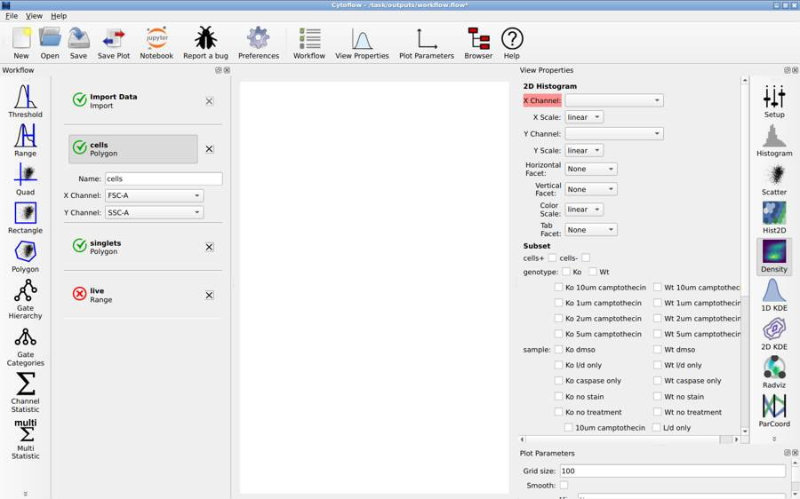
thinking
Nearly all stained cells fall into one bright Zombie NIR peak, so I'm checking that peak against scatter in the L/D-only well to see whether it's live-dim or dead before setting the live cut.
cu click 1183 658; sleep 0.5; cu click 1050 211; sleep 1; cu click 1034 237; sleep 1; cu click 1050 271; sleep 1; cu click 1034 321; sleep 1; cu click 1050 378; sleep 1; cu click 1034 404; sleep 1; cu click 1105 181; sleep 1; cu click 1050 206; sleep 1; cu click 1105 241; sleep 1; cu click 1080 337; sleep 12; tail -2 /tmp/mem.log; cu screenshot /tmp/screen.png
{
"file_path": "/tmp/screen.png"
}19:31:42 1630:412MB 1653:21MB 1655:1428MB free=5491 19:31:44 1630:412MB 1653:21MB 1655:1428MB free=5513 /tmp/screen.png
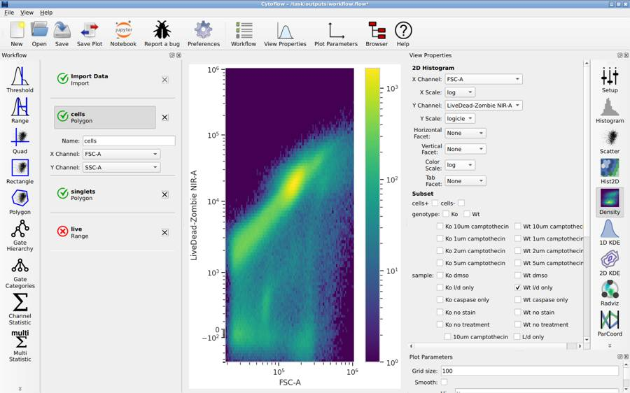
cu click 1183 658; sleep 0.5; cu click 1183 518; sleep 1; cu click 1050 211; sleep 1; cu click 1040 235; sleep 5; cu click 1105 181; sleep 1; cu click 1070 157; sleep 12; tail -2 /tmp/mem.log; cu screenshot /tmp/screen.png
{
"file_path": "/tmp/screen.png"
}19:32:21 1630:381MB 1653:21MB free=6985 19:32:23 1630:383MB 1653:21MB free=6990 /tmp/screen.png
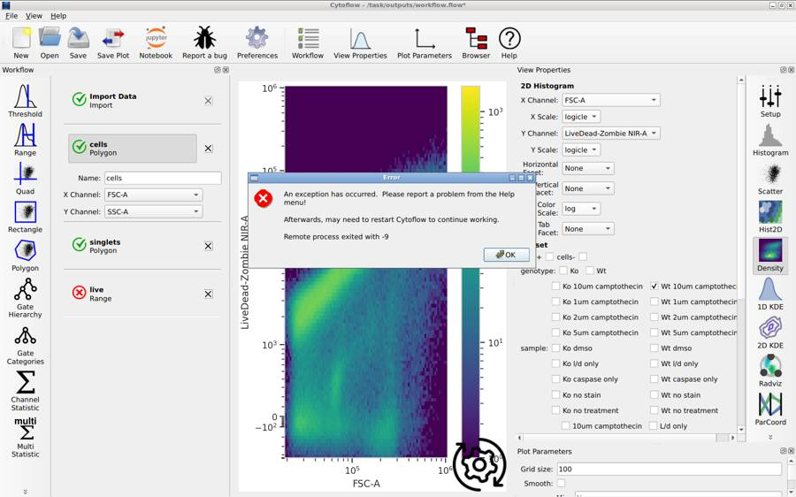
thinking
Unticking the only selected well made the plot briefly load all 8.4M events and crash again. I'm restarting Cytoflow and reloading the saved workflow, and from now on I'll tick the new subset before unticking the old one.
grep -n "19:32:0\|19:32:1" /tmp/mem.log | awk 'NR%2==0' | tail -8; cu click 915 461; sleep 1; cu click 21 29; sleep 1; cu click 47 196; sleep 3; cu screenshot /tmp/screen.png
{
"file_path": "/tmp/screen.png"
}302:19:32:02 1630:412MB 1653:21MB 1655:1428MB free=5533 304:19:32:06 1630:412MB 1653:21MB 1655:6864MB free=134 306:19:32:10 1630:381MB 1653:21MB free=6977 308:19:32:14 1630:381MB 1653:21MB free=6976 310:19:32:18 1630:381MB 1653:21MB free=6985 /tmp/screen.png

sleep 14; cu click 700 9 double; sleep 2; cu click 89 75; sleep 2; cu click 707 576; cu paste "/task/outputs/workflow.flow"; sleep 0.5; cu key Return; sleep 3; cu screenshot /tmp/screen.png
{
"file_path": "/tmp/screen.png"
}/tmp/screen.png

cu click 738 427; sleep 50; cu click 408 714; sleep 1; cu click 408 785; sleep 1; cu drag 1021 510 930 510; sleep 2; tail -2 /tmp/mem.log; cu screenshot /tmp/screen.png
{
"file_path": "/tmp/screen.png"
}19:34:09 5140:520MB 5162:38MB 5164:1497MB free=5587 19:34:11 5140:520MB 5162:38MB 5164:1497MB free=5591 /tmp/screen.png
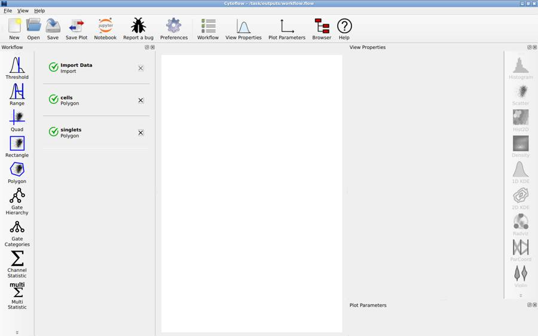
cu click 258 355; sleep 10; cu click 1393 455; sleep 3; cu screenshot /tmp/screen.png
{
"file_path": "/tmp/screen.png"
}/tmp/screen.png
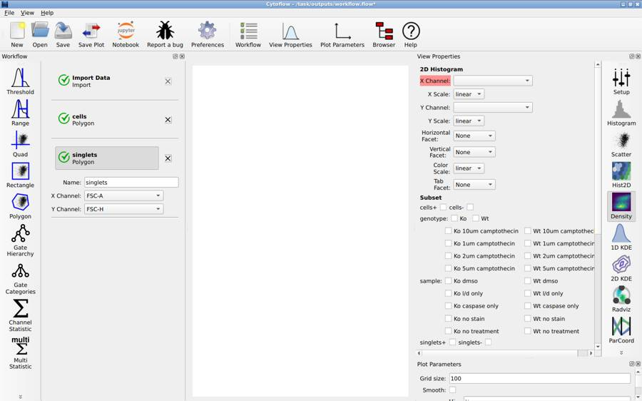
cu click 1183 518; sleep 0.5; cu click 994 465; sleep 0.5; cu click 1015 768; sleep 0.5; cu click 1050 211; sleep 1; cu click 1034 261; sleep 1; cu click 1050 271; sleep 1; cu click 1034 321; sleep 1; cu click 1050 378; sleep 1; cu click 1034 404; sleep 1; cu click 1105 181; sleep 1; cu click 1070 183; sleep 1; cu click 1105 241; sleep 1; cu click 1080 337; sleep 12; tail -2 /tmp/mem.log; cu screenshot /tmp/screen.png
{
"file_path": "/tmp/screen.png"
}19:35:03 5140:530MB 5162:38MB 5164:1528MB free=5527 19:35:05 5140:530MB 5162:38MB 5164:1528MB free=5532 /tmp/screen.png
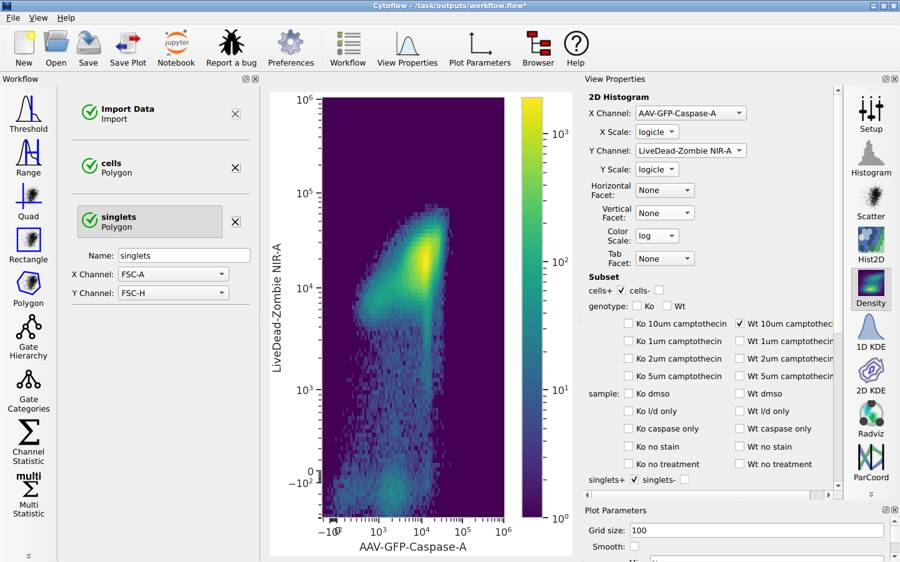
cu click 1183 743; sleep 8; cu click 1183 518; sleep 12; tail -2 /tmp/mem.log; cu screenshot /tmp/screen.png
{
"file_path": "/tmp/screen.png"
}19:35:35 5140:530MB 5162:38MB 5164:1529MB free=5513 19:35:37 5140:530MB 5162:38MB 5164:1529MB free=5522 /tmp/screen.png
thinking
Untreated and 10 µM wells look alike, with one bright cluster in both Zombie NIR and green. I'm checking the single-stain controls to set background for each channel.
cu click 1183 658; sleep 8; cu click 1183 743; sleep 12; cu screenshot /tmp/screen_ld.png; cu click 1183 686; sleep 8; cu click 1183 658; sleep 12; cu screenshot /tmp/screen_casp.png; tail -1 /tmp/mem.log
{
"file_path": "/tmp/screen_ld.png"
}{
"file_path": "/tmp/screen_casp.png"
}/tmp/screen_ld.png /tmp/screen_casp.png 19:36:28 5140:530MB 5162:38MB 5164:1531MB free=5519
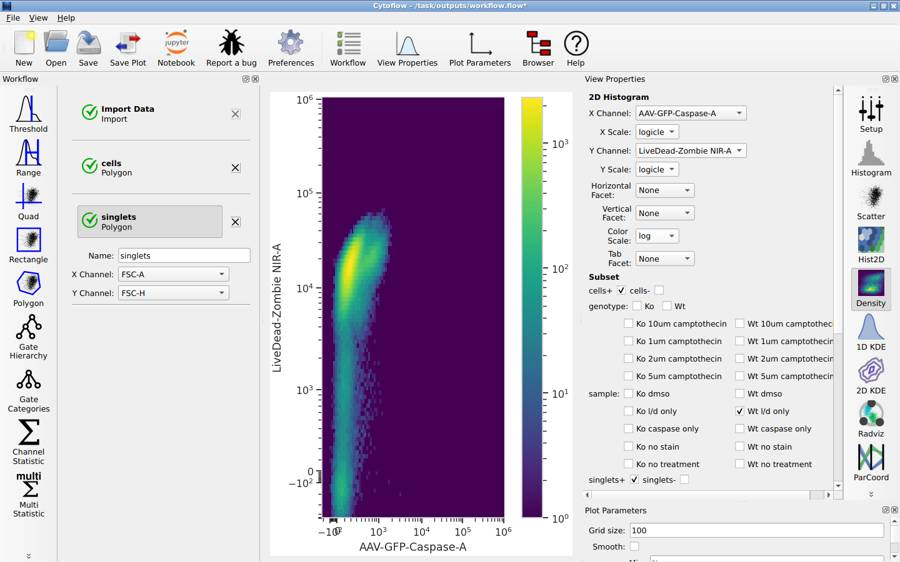
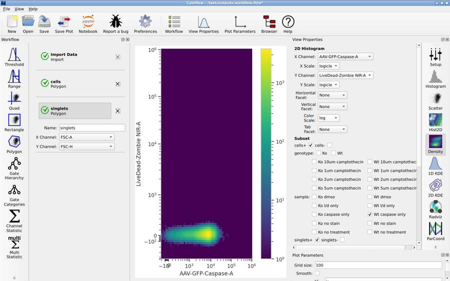
cu click 45 250; sleep 3; cu click 288 495; cu type "live"; cu key Return; sleep 1; cu click 1038 203; sleep 1; cu click 1030 253; sleep 1; cu click 994 287; sleep 0.5; cu click 1015 590; sleep 0.5; for y in 537 508 480 565; do cu click 1183 $y; sleep 0.5; done; cu click 1050 236; sleep 1; cu click 1035 141; sleep 1; cu click 265 525; sleep 1; cu click 258 621; sleep 12; cu screenshot /tmp/screen.png
{
"file_path": "/tmp/screen.png"
}/tmp/screen.png
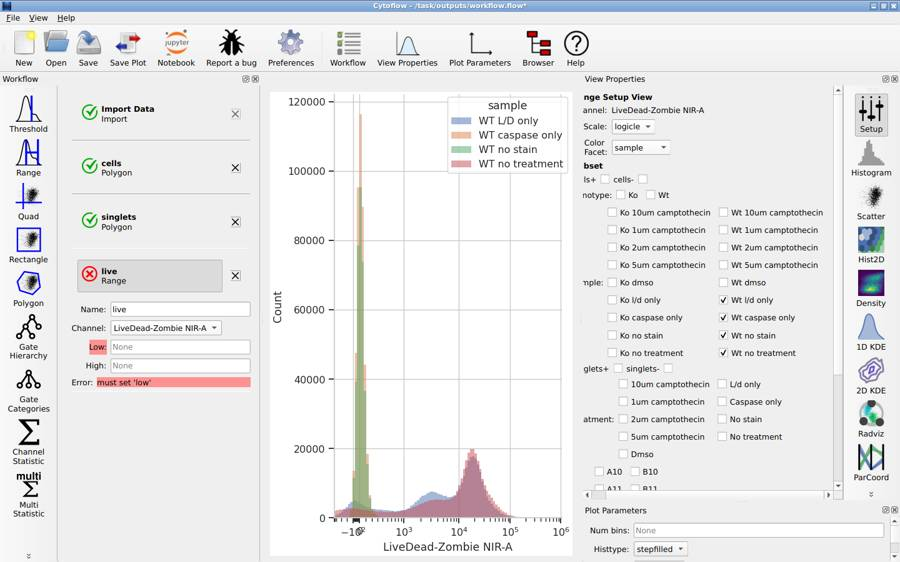
cu click 968 287; sleep 6; cu click 988 590; sleep 10; cu screenshot /tmp/screen.png
{
"file_path": "/tmp/screen.png"
}/tmp/screen.png
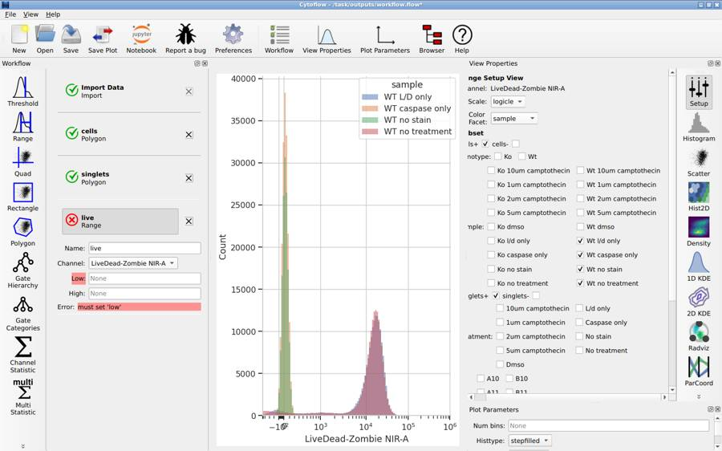
cu click 288 555; cu type "-100000"; cu key Return; sleep 2; cu click 288 585; cu type "1000"; cu key Return; sleep 20; tail -3 /tmp/mem.log; cu screenshot /tmp/screen.png
{
"file_path": "/tmp/screen.png"
}19:38:32 5140:531MB 5162:38MB 5164:1523MB free=5530 19:38:34 5140:531MB 5162:38MB 5164:1523MB free=5531 19:38:36 5140:531MB 5162:38MB 5164:1523MB free=5531 /tmp/screen.png
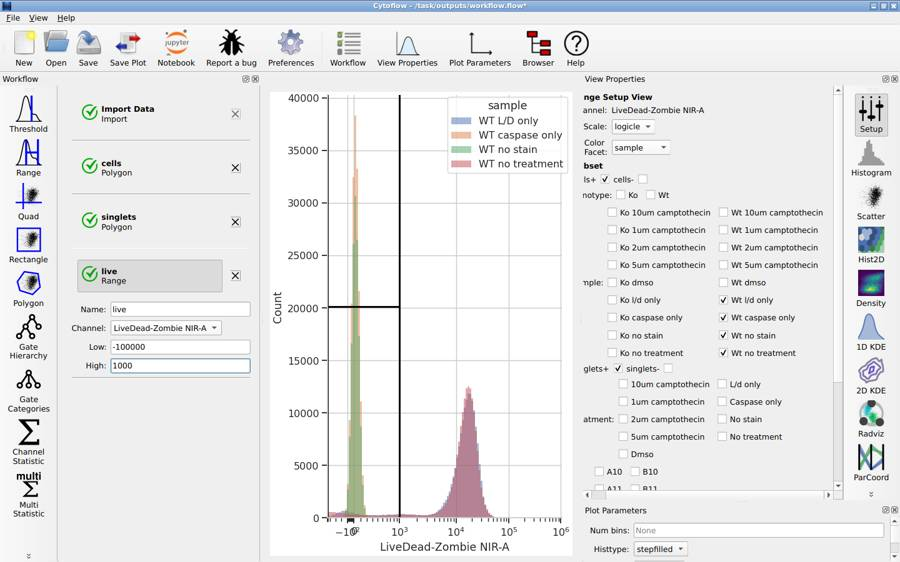
cu key ctrl+s; sleep 2; cu click 1393 455; sleep 3; cu scroll 1130 600 down 5; sleep 1; cu screenshot /tmp/screen.png
{
"file_path": "/tmp/screen.png"
}/tmp/screen.png
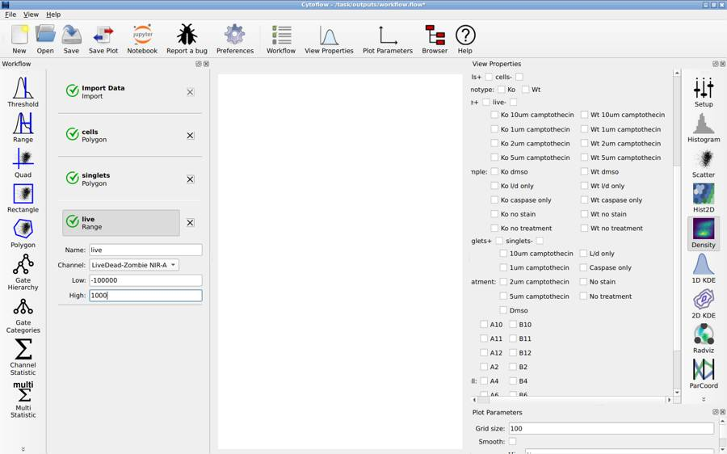
cu click 1157 452; sleep 0.5; cu click 963 202; sleep 0.5; cu scroll 1130 400 up 10; sleep 1; cu screenshot /tmp/screen.png
{
"file_path": "/tmp/screen.png"
}/tmp/screen.png
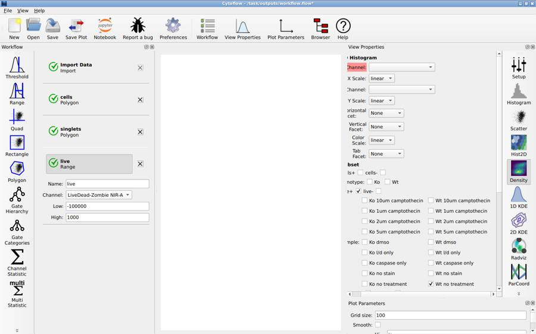
cu click 1024 211; sleep 1; cu click 1010 237; sleep 1; cu click 1024 271; sleep 1; cu click 1010 297; sleep 1; cu click 1024 378; sleep 1; cu click 1010 404; sleep 1; cu click 1080 181; sleep 1; cu click 1030 206; sleep 1; cu click 1080 241; sleep 1; cu click 1030 361; sleep 12; cu screenshot /tmp/screen.png
{
"file_path": "/tmp/screen.png"
}/tmp/screen.png
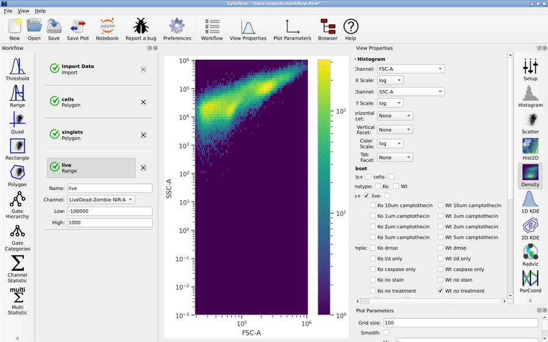
cu click 258 268; sleep 12; cu screenshot /tmp/screen.png
{
"file_path": "/tmp/screen.png"
}/tmp/screen.png
thinking
Viable zombie-negative cells form their own cluster at higher FSC and lower SSC, partly cut off by my first `cells` gate, so I'm redrawing it to take in both the viable and dead clusters.
for p in "607 418" "602 332" "636 227" "710 200" "761 227" "766 344" "744 418" "689 450" "643 450"; do cu click $p; sleep 0.7; done; cu click 607 418; sleep 25; tail -3 /tmp/mem.log; cu screenshot /tmp/screen.png
{
"file_path": "/tmp/screen.png"
}19:40:49 5140:532MB 5162:38MB 5164:1519MB free=5531 19:40:51 5140:532MB 5162:38MB 5164:1519MB free=5556 19:40:53 5140:532MB 5162:38MB 5164:1519MB free=5556 /tmp/screen.png
cu key ctrl+s; sleep 2; cu click 258 531; sleep 10; cu click 45 180; sleep 3; cu screenshot /tmp/screen.png
{
"file_path": "/tmp/screen.png"
}/tmp/screen.png
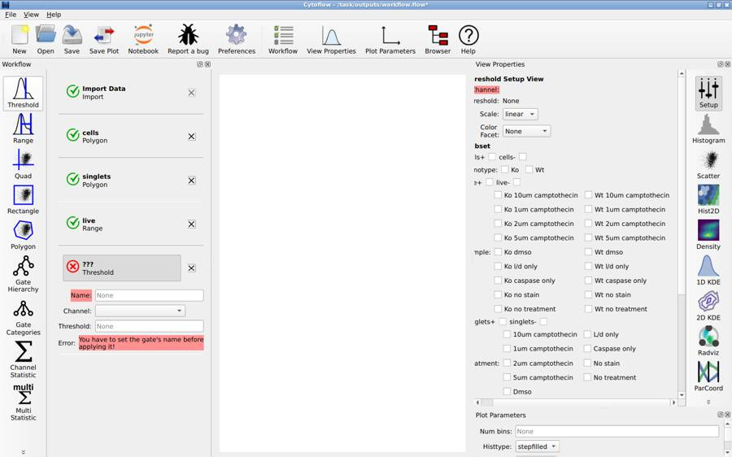
cu click 294 581; cu type "caspase_pos"; cu key Return; sleep 1; cu click 1022 225; sleep 1; cu click 1010 275; sleep 1; cu click 968 309; sleep 0.5; cu click 963 359; sleep 0.5; cu click 988 633; sleep 0.5; cu click 1157 524; sleep 0.5; cu click 1157 608; sleep 0.5; cu click 1157 384; sleep 0.5; cu click 979 608; sleep 0.5; cu click 1035 258; sleep 1; cu screenshot /tmp/screen.png
{
"file_path": "/tmp/screen.png"
}/tmp/screen.png
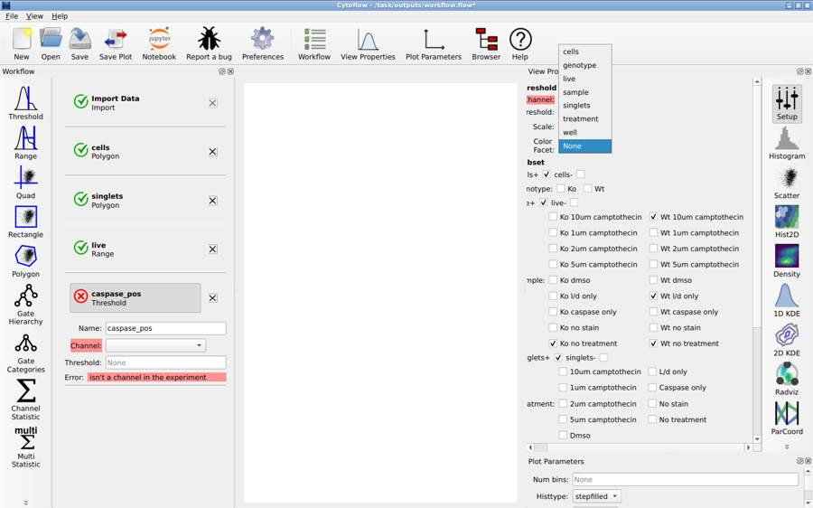
cu click 1020 163; sleep 1; cu click 275 612; sleep 1; cu click 250 614; sleep 12; cu screenshot /tmp/screen.png
{
"file_path": "/tmp/screen.png"
}/tmp/screen.png
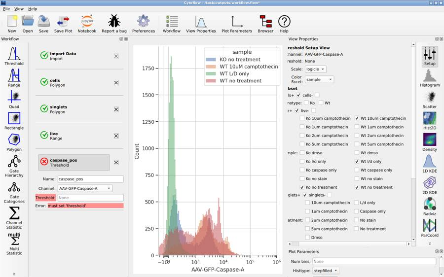
cu click 294 642; cu type "1000"; cu key Return; sleep 20; tail -2 /tmp/mem.log; cu key ctrl+s; sleep 2; cu screenshot /tmp/screen.png
{
"file_path": "/tmp/screen.png"
}19:42:39 5140:534MB 5162:38MB 5164:1519MB free=5532 19:42:41 5140:534MB 5162:38MB 5164:1519MB free=5532 /tmp/screen.png
cu click 45 705; sleep 3; cu screenshot /tmp/screen.png
{
"file_path": "/tmp/screen.png"
}/tmp/screen.png
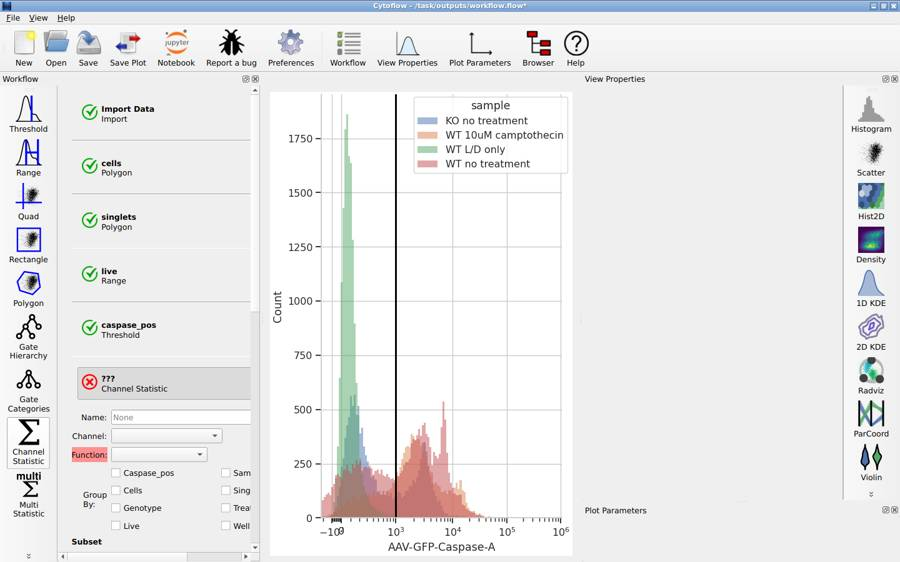
thinking
All four gates are applied and saved; I'm adding a Channel Statistic to count events per well across the gate combinations so I can export the table.
cu click 290 668; cu type "counts"; cu key Return; sleep 1; cu click 265 698; sleep 1; cu screenshot /tmp/screen.png
{
"file_path": "/tmp/screen.png"
}/tmp/screen.png
cu click 205 720; sleep 1; cu click 253 728; sleep 1; cu screenshot /tmp/screen.png
{
"file_path": "/tmp/screen.png"
}/tmp/screen.png
cu click 205 577; sleep 1; cu click 185 757; sleep 0.5; cu click 185 785; sleep 0.5; cu click 185 842; sleep 0.5; cu click 361 785; sleep 0.5; cu click 361 842; sleep 8; tail -2 /tmp/mem.log; cu screenshot /tmp/screen.png
{
"file_path": "/tmp/screen.png"
}19:43:25 5140:535MB 5162:38MB 5164:1519MB free=5382 19:43:28 5140:535MB 5162:38MB 5164:2210MB free=4701 /tmp/screen.png
sleep 20; tail -12 /tmp/mem.log | awk 'NR%2==0'; cu click 1393 790; sleep 2; cu screenshot /tmp/screen.png
{
"file_path": "/tmp/screen.png"
}19:43:34 5140:535MB 5162:38MB 5164:1529MB free=5340 19:43:38 5140:535MB 5162:38MB 5164:1529MB free=5403 19:43:42 5140:535MB 5162:38MB 5164:1529MB free=5454 19:43:46 5140:535MB 5162:38MB 5164:1529MB free=5486 19:43:50 5140:535MB 5162:38MB 5164:1529MB free=5507 19:43:54 5140:535MB 5162:38MB 5164:1529MB free=5508 /tmp/screen.png
cu click 1399 605; sleep 4; cu screenshot /tmp/screen.png
{
"file_path": "/tmp/screen.png"
}/tmp/screen.png
cu click 1050 181; sleep 1; cu screenshot /tmp/screen.png
{
"file_path": "/tmp/screen.png"
}/tmp/screen.png
cu click 1033 207; sleep 5; cu screenshot /tmp/screen.png
{
"file_path": "/tmp/screen.png"
}/tmp/screen.png
cu click 1050 211; sleep 2; cu screenshot /tmp/screen.png
{
"file_path": "/tmp/screen.png"
}/tmp/screen.png
cu click 707 567; cu paste "/task/outputs/cytoflow_export_counts.csv"; sleep 0.5; cu key Return; sleep 3; ls -la /task/outputs; head -40 /task/outputs/cytoflow_export_counts.csv; wc -l /task/outputs/cytoflow_export_counts.csv
total 76 drwxrwsrwx 2 agent task 4096 Nov 10 19:44 . drwxr-xr-x 4 root root 4096 Nov 5 22:25 .. -rw-rw-r-- 1 cfapp task 5195 Nov 10 19:44 cytoflow_export_counts.csv -rw-rw-r-- 1 cfapp task 59634 Nov 10 19:42 workflow.flow caspase_pos,cells,live,singlets,well,FSC-A 0,0,0,0,A10,56238.0 0,0,0,0,A11,55957.0 0,0,0,0,A12,39419.0 0,0,0,0,A2,2.0 0,0,0,0,A4,1.0 0,0,0,0,A6,88606.0 0,0,0,0,A7,51486.0 0,0,0,0,A8,40436.0 0,0,0,0,A9,50877.0 0,0,0,0,B10,112896.0 0,0,0,0,B11,119864.0 0,0,0,0,B12,84828.0 0,0,0,0,B2,32.0 0,0,0,0,B4,4.0 0,0,0,0,B6,145519.0 0,0,0,0,B7,135318.0 0,0,0,0,B8,112115.0 0,0,0,0,B9,107083.0 0,0,0,1,A10,5449.0 0,0,0,1,A11,5869.0 0,0,0,1,A12,4437.0 0,0,0,1,A6,19287.0 0,0,0,1,A7,4664.0 0,0,0,1,A8,3677.0 0,0,0,1,A9,4638.0 0,0,0,1,B10,12316.0 0,0,0,1,B11,18545.0 0,0,0,1,B12,16090.0 0,0,0,1,B2,4.0 0,0,0,1,B4,1.0 0,0,0,1,B6,35701.0 0,0,0,1,B7,14791.0 0,0,0,1,B8,12299.0 0,0,0,1,B9,11155.0 0,0,1,0,A10,44260.0 0,0,1,0,A11,28284.0 0,0,1,0,A12,24395.0 0,0,1,0,A2,117649.0 0,0,1,0,A4,97359.0 278 /task/outputs/cytoflow_export_counts.csv
mkdir -p /tmp/work && cat > /tmp/work/tab.py <<'EOF'
import pandas as pd, sys
f = sys.argv[1] if len(sys.argv)>1 else '/task/outputs/cytoflow_export_counts.csv'
d = pd.read_csv(f)
vcol = [c for c in d.columns if c not in ('caspase_pos','cells','live','singlets','well')][0]
d = d.rename(columns={vcol:'n'})
lay = pd.read_csv('/task/inputs/plate_layout.csv')
rows=[]
for w,g in d.groupby('well'):
tot=g.n.sum()
c=g[g.cells==1].n.sum()
s=g[(g.cells==1)&(g.singlets==1)].n.sum()
l=g[(g.cells==1)&(g.singlets==1)&(g.live==1)].n.sum()
p=g[(g.cells==1)&(g.singlets==1)&(g.live==1)&(g.caspase_pos==1)].n.sum()
# extras
dead=s-l
dp=g[(g.cells==1)&(g.singlets==1)&(g.live==0)&(g.caspase_pos==1)].n.sum()
sp=g[(g.cells==1)&(g.singlets==1)&(g.caspase_pos==1)].n.sum()
rows.append(dict(well=w,total=int(tot),cells=int(c),singlets=int(s),live=int(l),casp=int(p),
pct_cells=100*c/tot,pct_sing=100*s/c,pct_live=100*l/s,pct_casp_live=100*p/l if l else float('nan'),
pct_casp_dead=100*dp/dead if dead else float('nan'), pct_casp_singlets=100*sp/s))
r=pd.DataFrame(rows).merge(lay[['well','sample']],on='well')
r['o']=r.well.map(lambda w:(w[0],int(w[1:])))
r=r.sort_values('o').drop(columns='o')
pd.set_option('display.width',250); pd.set_option('display.float_format',lambda x:'%.2f'%x)
print(r.to_string(index=False))
EOF
python3 /tmp/work/tab.pywell total cells singlets live casp pct_cells pct_sing pct_live pct_casp_live pct_casp_dead pct_casp_singlets sample A2 365736 208609 142699 142697 1602 57.04 68.41 100.00 1.12 50.00 1.12 WT no stain A4 440820 254274 177834 177833 162982 57.68 69.94 100.00 91.65 100.00 91.65 WT caspase only A6 412724 237745 170996 15334 63 57.60 71.92 8.97 0.41 1.28 1.20 WT L/D only A7 395514 243964 177068 11805 8533 61.68 72.58 6.67 72.28 97.68 95.98 WT 10uM camptothecin A8 384992 235375 175033 16194 13014 61.14 74.36 9.25 80.36 98.28 96.62 WT 5uM camptothecin A9 428254 251601 179860 20501 16530 58.75 71.49 11.40 80.63 97.68 95.73 WT 2uM camptothecin A10 552590 308653 208656 21333 16113 55.86 67.60 10.22 75.53 97.37 95.14 WT 1uM camptothecin A11 377220 228959 162768 14463 6648 60.70 71.09 8.89 45.97 95.89 91.45 WT DMSO A12 409074 256908 175462 18527 10403 62.80 68.30 10.56 56.15 96.30 92.06 WT no treatment B2 392795 235378 183159 183102 8221 59.92 77.81 99.97 4.49 56.14 4.51 KO no stain B4 605670 359720 259048 259042 230628 59.39 72.01 100.00 89.03 100.00 89.03 KO caspase only B6 457465 241395 177574 9888 32 52.77 73.56 5.57 0.32 1.92 1.83 KO L/D only B7 612174 337589 235160 7693 4788 55.15 69.66 3.27 62.24 92.78 91.79 KO 10uM camptothecin B8 493435 280984 207527 4536 2754 56.94 73.86 2.19 60.71 92.40 91.71 KO 5uM camptothecin B9 425772 222845 169293 8104 4132 52.34 75.97 4.79 50.99 91.69 89.74 KO 2uM camptothecin B10 539106 294319 214393 8583 4293 54.59 72.84 4.00 50.02 92.94 91.22 KO 1uM camptothecin B11 561171 299616 211308 8967 3107 53.39 70.53 4.24 34.65 89.17 86.86 KO DMSO B12 538223 293290 207572 12646 4292 54.49 70.77 6.09 33.94 89.63 86.24 KO no treatment
cat > /tmp/work/tab2.py <<'EOF'
import pandas as pd
d = pd.read_csv('/task/outputs/cytoflow_export_counts.csv').rename(columns={'FSC-A':'n'})
for w in ['A6','A12','A7','B6','B12','B7']:
g=d[d.well==w]
f=lambda **k: g[(g[list(k)]==pd.Series(k)).all(axis=1)].n.sum()
print(w, 'live events total',f(live=1),'in cells',f(live=1,cells=1),'in cells&singlets',f(live=1,cells=1,singlets=1),
'| singlet frac of live cells %.1f'%(100*f(live=1,cells=1,singlets=1)/f(live=1,cells=1)),
'of dead cells %.1f'%(100*f(live=0,cells=1,singlets=1)/f(live=0,cells=1)),
'| casp+ of live noncell %.1f'%(100*f(live=1,cells=0,caspase_pos=1)/f(live=1,cells=0)),
'| live%% of cells %.1f'%(100*f(live=1,cells=1)/f(cells=1)))
EOF
python3 /tmp/work/tab2.pyA6 live events total 84529.0 in cells 25052.0 in cells&singlets 15334.0 | singlet frac of live cells 61.2 of dead cells 73.2 | casp+ of live noncell 0.0 | live% of cells 10.5 A12 live events total 77119.0 in cells 27361.0 in cells&singlets 18527.0 | singlet frac of live cells 67.7 of dead cells 68.4 | casp+ of live noncell 43.3 | live% of cells 10.7 A7 live events total 55377.0 in cells 19529.0 in cells&singlets 11805.0 | singlet frac of live cells 60.4 of dead cells 73.6 | casp+ of live noncell 36.2 | live% of cells 8.0 B6 live events total 44629.0 in cells 13558.0 in cells&singlets 9888.0 | singlet frac of live cells 72.9 of dead cells 73.6 | casp+ of live noncell 0.0 | live% of cells 5.6 B12 live events total 113394.0 in cells 18303.0 in cells&singlets 12646.0 | singlet frac of live cells 69.1 of dead cells 70.9 | casp+ of live noncell 9.4 | live% of cells 6.2 B7 live events total 49210.0 in cells 9535.0 in cells&singlets 7693.0 | singlet frac of live cells 80.7 of dead cells 69.3 | casp+ of live noncell 18.9 | live% of cells 2.8
thinking
Controls look right, though only 2–11% of singlets are Zombie-negative across every stained well. I'm running acquisition QC on event rate over Time to check for clogs or dry wells.
cu click 258 528; sleep 8; cu click 1393 180; sleep 3; cu screenshot /tmp/screen.png
{
"file_path": "/tmp/screen.png"
}/tmp/screen.png
cu click 1393 250; sleep 3; cu scroll 1130 500 down 10; sleep 1; cu screenshot /tmp/screen.png
{
"file_path": "/tmp/screen.png"
}/tmp/screen.png
for y in 596 624 652 680 708 736; do cu click 985 $y; sleep 0.4; done; cu scroll 1130 400 up 15; sleep 1; cu screenshot /tmp/screen.png
{
"file_path": "/tmp/screen.png"
}/tmp/screen.png
cu click 1066 281; sleep 1; cu click 1040 257; sleep 1; cu click 1100 181; sleep 1; cu click 1040 373; sleep 20; tail -8 /tmp/mem.log | awk 'NR%2==0'; cu screenshot /tmp/screen.png
{
"file_path": "/tmp/screen.png"
}19:47:17 5140:537MB 5162:38MB 5164:1591MB free=5313 19:47:21 5140:537MB 5162:38MB 5164:1591MB free=5336 19:47:25 5140:537MB 5162:38MB 5164:1591MB free=5367 19:47:29 5140:537MB 5162:38MB 5164:1591MB free=5408 /tmp/screen.png
cu scroll 1130 500 down 10; sleep 1; for y in 512 540 568; do cu click 985 $y; sleep 0.4; done; for y in 596 624 652; do cu click 1042 $y; sleep 0.4; done; for y in 596 624 652 680 708 736; do cu click 985 $y; sleep 0.4; done; sleep 20; cu screenshot /tmp/screen.png; tail -1 /tmp/mem.log
{
"file_path": "/tmp/screen.png"
}/tmp/screen.png 19:48:07 5140:537MB 5162:38MB 5164:2150MB free=4634
sleep 5; cu click 1042 674; sleep 0.5; cu click 985 758; sleep 25; cu screenshot /tmp/screen.png; tail -1 /tmp/mem.log
{
"file_path": "/tmp/screen.png"
}/tmp/screen.png 19:48:49 5140:537MB 5162:38MB 5164:1586MB free=5443
thinking
Well A12 (WT, no treatment) shows an acquisition interruption: almost no signal for the first ~20 s, then a burst, while the other wells are flat. I'm checking the last five KO wells before looking more closely at A12.
for y in 702 730 758 534 562; do cu click 1042 $y; sleep 0.4; done; for y in 534 562; do cu click 985 $y; sleep 0.4; done; for y in 618 646 674; do cu click 1042 $y; sleep 0.4; done; sleep 30; cu screenshot /tmp/screen.png; tail -1 /tmp/mem.log
{
"file_path": "/tmp/screen.png"
}/tmp/screen.png 19:49:37 5140:537MB 5162:38MB 5164:1594MB free=5465

cu click 1393 485; sleep 3; cu scroll 1130 500 down 15; sleep 1; cu screenshot /tmp/screen.png
{
"file_path": "/tmp/screen.png"
}/tmp/screen.png
cu click 985 568; sleep 0.5; cu scroll 1130 400 up 20; sleep 1; cu click 1050 271; sleep 1; cu click 1034 321; sleep 1; cu click 1050 378; sleep 1; cu click 1034 404; sleep 1; cu click 1105 181; sleep 1; cu click 1050 373; sleep 1; cu click 1105 241; sleep 1; cu click 1070 243; sleep 12; cu screenshot /tmp/screen.png
{
"file_path": "/tmp/screen.png"
}/tmp/screen.png
cu click 1393 250; sleep 12; cu scroll 1130 500 down 15; sleep 1; cu screenshot /tmp/screen.png
{
"file_path": "/tmp/screen.png"
}/tmp/screen.png
thinking
A12's green signal narrows to a thin band during the 20–31 s burst, so I'll flag its fluorescence data as unreliable. Next I'm comparing the unstained and L/D-only controls in the green channel to check background.
cu click 985 618; sleep 0.3; cu click 1042 618; sleep 0.3; cu click 985 674; sleep 0.3; cu click 1042 674; sleep 0.3; cu click 985 590; sleep 0.3; for y in 534 562 590 702 730 758; do cu click 1042 $y; sleep 0.3; done; cu click 1015 368; sleep 1; cu scroll 1130 400 up 20; sleep 1; cu click 1045 211; sleep 1; cu click 1034 261; sleep 1; cu click 1100 181; sleep 1; cu screenshot /tmp/screen.png
{
"file_path": "/tmp/screen.png"
}/tmp/screen.png
cu click 1080 14; sleep 25; cu screenshot /tmp/screen.png
{
"file_path": "/tmp/screen.png"
}/tmp/screen.png
cu click 45 250; sleep 3; cu screenshot /tmp/screen.png
{
"file_path": "/tmp/screen.png"
}/tmp/screen.png
cu click 280 668; cu type "acq_first20s"; cu key Return; sleep 1; cu click 1183 608; sleep 0.4; cu click 1183 496; sleep 0.4; cu click 1050 236; sleep 1; cu click 1035 140; sleep 1; cu click 265 698; sleep 1; cu screenshot /tmp/screen.png
{
"file_path": "/tmp/screen.png"
}/tmp/screen.png
cu click 200 887; sleep 8; cu click 280 728; cu type "0"; cu key Return; sleep 2; cu click 280 758; cu type "20000"; cu key Return; sleep 20; tail -2 /tmp/mem.log; cu screenshot /tmp/screen.png
{
"file_path": "/tmp/screen.png"
}19:53:12 5140:542MB 5162:38MB 5164:1586MB free=5379 19:53:14 5140:542MB 5162:38MB 5164:1586MB free=5401 /tmp/screen.png
cu key ctrl+s; sleep 2; cu click 258 821; sleep 4; cu screenshot /tmp/screen.png
{
"file_path": "/tmp/screen.png"
}/tmp/screen.png
cu click 185 844; sleep 20; cu click 1050 211; sleep 2; cu click 707 567; cu paste "/task/outputs/cytoflow_export_counts.csv"; sleep 0.5; cu key Return; sleep 2; cu screenshot /tmp/screen.png
{
"file_path": "/tmp/screen.png"
}/tmp/screen.png
cu click 736 409; sleep 3; cu key ctrl+s; sleep 2; head -3 /task/outputs/cytoflow_export_counts.csv; wc -l /task/outputs/cytoflow_export_counts.csv; cat > /tmp/work/tab3.py <<'EOF'
import pandas as pd
d = pd.read_csv('/task/outputs/cytoflow_export_counts.csv').rename(columns={'FSC-A':'n'})
lay = pd.read_csv('/task/inputs/plate_layout.csv')
rows=[]
for w,g in d.groupby('well'):
S=lambda m: int(g[m].n.sum())
c=(g.cells==1); s=c&(g.singlets==1); l=s&(g.live==1); p=l&(g.caspase_pos==1); e=(g.acq_first20s==1)
tot=int(g.n.sum())
rows.append(dict(well=w,total=tot,cells=S(c),singlets=S(s),live=S(l),casp=S(p),first20=S(e),
pct_first20=100*S(e)/tot, pct_live=100*S(l)/S(s), pct_casp=100*S(p)/S(l),
casp_late=100*S(p&~e)/max(S(l&~e),1), live_late=100*S(l&~e)/max(S(s&~e),1),
casp_early=100*S(p&e)/max(S(l&e),1)))
r=pd.DataFrame(rows).merge(lay[['well','sample']],on='well')
r['o']=r.well.map(lambda w:(w[0],int(w[1:]))); r=r.sort_values('o').drop(columns='o')
pd.set_option('display.width',250); pd.set_option('display.float_format',lambda x:'%.2f'%x)
print(r.to_string(index=False)); print(r.total.sum())
EOF
python3 /tmp/work/tab3.pycaspase_pos,cells,live,singlets,well,acq_first20s,FSC-A 0,0,0,0,A10,0,29439.0 0,0,0,0,A10,1,26799.0 544 /task/outputs/cytoflow_export_counts.csv well total cells singlets live casp first20 pct_first20 pct_live pct_casp casp_late live_late casp_early sample A2 365736 208609 142699 142697 1602 161614 44.19 100.00 1.12 1.22 100.00 1.00 WT no stain A4 440820 254274 177834 177833 162982 189040 42.88 100.00 91.65 91.49 100.00 91.86 WT caspase only A6 412724 237745 170996 15334 63 183229 44.40 8.97 0.41 0.56 8.91 0.23 WT L/D only A7 395514 243964 177068 11805 8533 173227 43.80 6.67 72.28 72.22 6.59 72.36 WT 10uM camptothecin A8 384992 235375 175033 16194 13014 176274 45.79 9.25 80.36 79.87 9.01 80.90 WT 5uM camptothecin A9 428254 251601 179860 20501 16530 190160 44.40 11.40 80.63 80.60 11.32 80.67 WT 2uM camptothecin A10 552590 308653 208656 21333 16113 253454 45.87 10.22 75.53 75.34 10.17 75.75 WT 1uM camptothecin A11 377220 228959 162768 14463 6648 163752 43.41 8.89 45.97 45.00 9.08 47.30 WT DMSO A12 409074 256908 175462 18527 10403 2824 0.69 10.56 56.15 55.97 10.54 78.62 WT no treatment B2 392795 235378 183159 183102 8221 168013 42.77 99.97 4.49 4.73 99.96 4.17 KO no stain B4 605670 359720 259048 259042 230628 266345 43.98 100.00 89.03 88.78 100.00 89.35 KO caspase only B6 457465 241395 177574 9888 32 197872 43.25 5.57 0.32 0.37 5.60 0.26 KO L/D only B7 612174 337589 235160 7693 4788 272273 44.48 3.27 62.24 62.39 3.23 62.05 KO 10uM camptothecin B8 493435 280984 207527 4536 2754 226431 45.89 2.19 60.71 61.25 2.19 60.08 KO 5uM camptothecin B9 425772 222845 169293 8104 4132 191196 44.91 4.79 50.99 50.58 4.86 51.52 KO 2uM camptothecin B10 539106 294319 214393 8583 4293 238775 44.29 4.00 50.02 49.69 4.10 50.47 KO 1uM camptothecin B11 561171 299616 211308 8967 3107 252420 44.98 4.24 34.65 33.85 4.34 35.71 KO DMSO B12 538223 293290 207572 12646 4292 240673 44.72 6.09 33.94 33.07 5.97 34.99 KO no treatment 8392735
cd /task/outputs; ls -la; python3 -I - <<'EOF'
import re
t=open('/task/outputs/workflow.flow').read()
# print operations sections
for m in re.finditer(r'operation: !(\S+)', t):
s=m.start(); print('----', t[s:s+900].split('statistics:')[0][:900])
EOFtotal 176
drwxrwsrwx 2 agent task 4096 Nov 10 19:44 .
drwxr-xr-x 4 root root 4096 Nov 5 22:25 ..
-rw-rw-r-- 1 cfapp task 11101 Nov 10 19:54 cytoflow_export_counts.csv
-rw-rw-r-- 1 cfapp task 158229 Nov 10 19:54 workflow.flow
---- operation: !import;4
channels_list: []
conditions:
genotype: category
sample: category
treatment: category
well: category
events: null
ignore_v_bool: false
name_metadata: null
tubes:
- !tube;1
conditions:
genotype: WT
sample: WT no stain
treatment: no stain
well: A2
file: /task/inputs/raw/Caspase_WT_KO_optimization_caspase_Group_A2.fcs
- !tube;1
conditions:
genotype: WT
sample: WT caspase only
treatment: caspase only
well: A4
file: /task/inputs/raw/Caspase_WT_KO_optimization_caspase_Group_A4.fcs
- !tube;1
conditions:
genotype: WT
sample: WT L/D only
treatment: L/D only
well: A6
file: /task/inputs/raw/Caspase_WT_KO_optimization_caspase_Group_A6.fcs
- !tube;1
conditions:
genotype: WT
---- operation: !channel-statistic;2
by:
- caspase_pos
- cells
- live
- singlets
- well
- acq_first20s
channel: FSC-A
function_name: Count
name: counts
subset_list:
- !bool-subset;1
name: acq_first20s
selected_f: false
selected_t: false
values: []
- !bool-subset;1
name: caspase_pos
selected_f: false
selected_t: false
values:
- false
- true
- !bool-subset;1
name: cells
selected_f: false
selected_t: false
values:
- false
- true
- !category-subset;1
name: genotype
selected: []
values:
- KO
- WT
- !bool-subset;1
name: live
selected_f: false
selected_t: false
values:
- false
- true
- !category-subset;1
name: sample
selected: []
values:
- KO 10uM cacd /task/outputs; grep -n "operation: \|^- !workflow-item\| operation:" workflow.flow | head -20; grep -n -A14 "operation: !polygon\|operation: !range\|operation: !threshold" workflow.flow | grep -v "^--$" | head -120
1:- !workflow-item;5 354: operation: !import;4 640:- !workflow-item;5 1038: operation: *id003 1188:- !workflow-item;5 1586: operation: &id005 !polygon;1 1874:- !workflow-item;5 2297: operation: &id009 !range;1 2561:- !workflow-item;5 3013: operation: &id012 !threshold;1 3402:- !workflow-item;5 3862: operation: *id014 4012:- !workflow-item;5 4411: operation: !channel-statistic;2
cd /task/outputs; grep -n "!polygon\|!range;\|!threshold;" workflow.flow | head; for pat in "&id003 !polygon" "&id005 !polygon" "&id009 !range" "&id012 !threshold" "&id014 !range"; do n=$(grep -n -- "$pat" workflow.flow | head -1 | cut -d: -f1); echo "== $pat @ $n"; sed -n "${n},$((n+40))p" workflow.flow | grep -v "^ *- *$" | head -45; done 2>/dev/null | cut -c1-110784: current_view: &id004 !polygon-view;3
788: op: &id003 !polygon;1
822: plot_params: !polygon-params;1
1586: operation: &id005 !polygon;1
1768: - !polygon-view;3
1773: plot_params: !polygon-params;1
2297: operation: &id009 !range;1
3013: operation: &id012 !threshold;1
3591: op: &id014 !range;1
== &id003 !polygon @ 788
op: &id003 !polygon;1
name: cells
vertices:
- !!python/tuple
- 74552.50461197403
- 69754.914405178
- !!python/tuple
- 69643.91340448486
- 168070.54019766723
- !!python/tuple
- 109170.43437505026
- 496479.4710443519
- !!python/tuple
- 287162.58403577737
- 656140.5249856622
- !!python/tuple
- 559761.1494862497
- 496479.4710443519
- !!python/tuple
- 599213.824132838
- 149368.44382679698
- !!python/tuple
- 450142.19481567596
- 69754.914405178
- !!python/tuple
- 218681.2596952354
- 50025.5226867186
- !!python/tuple
- 120092.45923158657
- 50025.5226867186
xchannel: FSC-A
xscale: log
ychannel: SSC-A
yscale: log
plot_params: !polygon-params;1
alpha: 0.25
col_wrap: null
density: true
despine: true
gridsize: 50
huelabel: ''
== &id005 !polygon @ 1586
operation: &id005 !polygon;1
name: singlets
vertices:
- !!python/tuple
- 61815.890627220535
- 42241.2628382238
- !!python/tuple
- 61815.890627220535
- 68109.26766972794
- !!python/tuple
- 149317.36897549537
- 160264.03488196142
- !!python/tuple
- 300014.359464191
- 299843.4776186191
- !!python/tuple
- 448280.75333210116
- 340262.23516784434
- !!python/tuple
- 448280.75333210116
- 275053.306321761
- !!python/tuple
- 251402.42704848267
- 165114.28578786843
- !!python/tuple
- 149317.36897549537
- 105294.52461501514
- !!python/tuple
- 81260.66359350379
- 56253.09878862188
xchannel: FSC-A
xscale: linear
ychannel: FSC-H
yscale: linear
statistics:
Conditions: !pandas-dataframe;1
columns: []
data: {}
index: !pandas-multiindex;2
codes:
- - 1
== &id009 !range @ 2297
operation: &id009 !range;1
channel: LiveDead-Zombie NIR-A
high: 1000.0
low: -100000.0
name: live
statistics:
Conditions: !pandas-dataframe;1
columns: []
data: {}
index: !pandas-multiindex;2
codes:
- - 1
- 1
- 1
- 1
- 1
- 1
- 1
- 1
- 1
- 0
- 0
- 0
- 0
- 0
- 0
- 0
- 0
- 0
- - 16
- 15
- 14
- 9
- 12
- 11
- 10
- 13
- 17
- 7
- 6
- 5
== &id012 !threshold @ 3013
operation: &id012 !threshold;1
channel: AAV-GFP-Caspase-A
name: caspase_pos
threshold: 1000.0
statistics:
Conditions: !pandas-dataframe;1
columns: []
data: {}
index: !pandas-multiindex;2
codes:
- - 1
- 1
- 1
- 1
- 1
- 1
- 1
- 1
- 1
- 0
- 0
- 0
- 0
- 0
- 0
- 0
- 0
- 0
- - 16
- 15
- 14
- 9
- 12
- 11
- 10
- 13
- 17
- 7
- 6
- 5
- 0
== &id014 !range @ 3591
op: &id014 !range;1
channel: Time
high: 20000.0
low: 0.0
name: acq_first20s
plot_params: !histogram-params;4
alpha: 0.5
col_wrap: null
density: false
despine: true
histtype: stepfilled
huelabel: ''
legend: true
legend_loc: upper right
lim: *id011
linestyle: solid
linewidth: null
margin_titles: false
max_quantile: 1.0
min_quantile: 0.001
num_bins: null
orientation: vertical
palette: ''
sharex: true
sharey: true
sns_context: notebook
sns_style: whitegrid
title: ''
xlabel: ''
ylabel: ''
scale: linear
subset_list:
- !bool-subset;1
name: caspase_pos
selected_f: false
selected_t: false
values: []
- !bool-subset;1
name: cells
selected_f: false
selected_t: falsethinking
The workflow file is saved with all gates, and I'm running a quick sensitivity check on the caspase threshold at 3000 instead of 1000. I'll restore it to 1000 afterwards.
chmod 777 /tmp/work; cu click 258 528; sleep 8; cu screenshot /tmp/screen.png
{
"file_path": "/tmp/screen.png"
}/tmp/screen.png
cu click 294 642; cu key ctrl+a; cu type "3000"; cu key Return; sleep 30; cu click 258 791; sleep 5; cu click 1050 211; sleep 2; cu click 707 567; cu paste "/tmp/work/sens_casp3000.csv"; sleep 0.5; cu key Return; sleep 3; ls -la /tmp/work; cu screenshot /tmp/screen.png
{
"file_path": "/tmp/screen.png"
}total 32 drwxrwxrwx 2 root root 4096 Nov 10 19:56 . drwxrwxrwx 11 root root 4096 Nov 10 19:55 .. -rw-rw-r-- 1 cfapp cfapp 10866 Nov 10 19:56 sens_casp3000.csv -rw-r--r-- 1 root root 1305 Nov 10 19:44 tab.py -rw-r--r-- 1 root root 701 Nov 10 19:46 tab2.py -rw-r--r-- 1 root root 956 Nov 10 19:54 tab3.py /tmp/screen.png
cd /tmp/work; sed 's#/task/outputs/cytoflow_export_counts.csv#/tmp/work/sens_casp3000.csv#' tab3.py > tab3s.py; python3 tab3s.py | awk '{print $1, $6, $10, $NF}' OFS='\t' | head -20; python3 - <<'EOF'
import pandas as pd
for f in ['/task/outputs/cytoflow_export_counts.csv','/tmp/work/sens_casp3000.csv']:
d=pd.read_csv(f).rename(columns={'FSC-A':'n'})
g=d[(d.cells==1)&(d.singlets==1)&(d.live==1)]
t=g.groupby('well').n.sum(); p=g[g.caspase_pos==1].groupby('well').n.sum()
print((100*p/t).round(1).to_dict())
EOFwell casp pct_casp sample
A2 2 0.00 stain
A4 138675 77.98 only
A6 15 0.10 only
A7 3919 33.20 camptothecin
A8 6219 38.40 camptothecin
A9 8033 39.18 camptothecin
A10 8275 38.79 camptothecin
A11 3322 22.97 DMSO
A12 5983 32.29 treatment
B2 3 0.00 stain
B4 120188 46.40 only
B6 1 0.01 only
B7 3295 42.83 camptothecin
B8 1720 37.92 camptothecin
B9 2744 33.86 camptothecin
B10 2612 30.43 camptothecin
B11 1047 11.68 DMSO
B12 1907 15.08 treatment
8392735 8392735
{'A10': 75.5, 'A11': 46.0, 'A12': 56.2, 'A2': 1.1, 'A4': 91.6, 'A6': 0.4, 'A7': 72.3, 'A8': 80.4, 'A9': 80.6, 'B10': 50.0, 'B11': 34.6, 'B12': 33.9, 'B2': 4.5, 'B4': 89.0, 'B6': 0.3, 'B7': 62.2, 'B8': 60.7, 'B9': 51.0}
{'A10': 38.8, 'A11': 23.0, 'A12': 32.3, 'A2': 0.0, 'A4': 78.0, 'A6': 0.1, 'A7': 33.2, 'A8': 38.4, 'A9': 39.2, 'B10': 30.4, 'B11': 11.7, 'B12': 15.1, 'B2': 0.0, 'B4': 46.4, 'B6': 0.0, 'B7': 42.8, 'B8': 37.9, 'B9': 33.9}
Shell cwd was reset to /taskthinking
Camptothecin raises caspase+ in both genotypes, but the KO-vs-WT gap under it is fragile at the higher cut. I'm restoring the threshold to 1000 and re-exporting to check the counts reproduce.
cu click 258 528; sleep 8; cu click 294 642; cu key ctrl+a; cu type "1000"; cu key Return; sleep 30; cu click 258 791; sleep 5; cu click 1050 211; sleep 2; cu click 707 567; cu paste "/tmp/work/recheck_1000.csv"; sleep 0.5; cu key Return; sleep 3; cu key ctrl+s; sleep 3; cmp /tmp/work/recheck_1000.csv /task/outputs/cytoflow_export_counts.csv && echo IDENTICAL; grep -n "threshold: \|high: \|low: " /task/outputs/workflow.flow | head; ls -la /task/outputs; cu screenshot /tmp/screen.png
{
"file_path": "/tmp/screen.png"
}IDENTICAL 2299: high: 1000.0 2300: low: -100000.0 3016: threshold: 1000.0 3593: high: 20000.0 3594: low: 0.0 total 176 drwxrwsrwx 2 agent task 4096 Nov 10 19:44 . drwxr-xr-x 4 root root 4096 Nov 5 22:25 .. -rw-rw-r-- 1 cfapp task 11101 Nov 10 19:54 cytoflow_export_counts.csv -rw-rw-r-- 1 cfapp task 158277 Nov 10 19:57 workflow.flow /tmp/screen.png
{
"skill": "dataviz"
}Launching skill: dataviz
cd /tmp/claude-0/bundled-skills/2.1.322/70d094c2cd5be5d2379d1fa8e5c675bd/dataviz; grep -n -i "categorical\|#[0-9a-f]\{6\}" references/palette.md | head -40; which node && node scripts/validate_palette.js "#2a78d6,#e8743b" --mode light 2>&1 | tail -1518: --surface-1: #fcfcfb; /* chart surface */
19: --text-primary: #0b0b0b;
20: --text-secondary: #52514e;
21: --series-1: #2a78d6; /* categorical slot 1 */
27: --surface-1: #1a1a19;
28: --text-primary: #f0efec;
29: --text-secondary: #c3c2b7;
30: --series-1: #3987e5;
35: --surface-1: #1a1a19;
36: --text-primary: #f0efec;
37: --text-secondary: #c3c2b7;
38: --series-1: #3987e5;
47:## Categorical palette
54:| 1 | blue | `#2a78d6` | `#3987e5` |
55:| 2 | orange | `#eb6834` | `#d95926` |
56:| 3 | aqua | `#1baf7a` | `#199e70` |
57:| 4 | yellow | `#eda100` | `#c98500` |
58:| 5 | magenta | `#e87ba4` | `#d55181` |
59:| 6 | green | `#008300` | `#008300` |
60:| 7 | violet | `#6250d6` | `#9085e9` |
61:| 8 | red | `#e34948` | `#e66767` |
86:pure re-order. Light slot 7 has since been lightened, `#4a3aa7` -> `#6250d6`
103:once, the second takes the next categorical slot's hue (orange), each as its own
108:| 100 | `#cde2fb` | 250 | `#86b6ef` | 400 | `#3987e5` | 550 | `#1c5cab` |
109:| 150 | `#b7d3f6` | 300 | `#6da7ec` | 450 | `#2a78d6` | 600 | `#184f95` |
110:| 200 | `#9ec5f4` | 350 | `#5598e7` | 500 | `#256abf` | 650 | `#104281` |
111:| | | | | | | 700 | `#0d366b` |
117:must still clear 2:1: on light, start no lighter than **step 250** (`#86b6ef`,
118:2.06:1); on dark, go no darker than **step 600** (`#184f95`, 2.15:1).
123:(light `#f0efec`, dark `#383835`). Equal step count per arm. (blue<->aqua was
130:| good | `#0ca30c` | 3.27 | 5.19 |
131:| warning | `#fab219` | 1.79 | 9.49 |
132:| serious | `#ec835a` | 2.57 | 6.60 |
133:| critical | `#d03b3b` | 4.68 | 3.62 |
135:Dark: same four steps - all clear 3:1 on the dark surface (`#1a1a19`) and remain
136:distinct from the dark categorical slots. On the light surface, warning and
139:from the categorical slots so a status color never impersonates a series -
142:(unsimulated Delta E >= 15), around nine categorical-vs-status pairs per mode sit
145:green `#006300` sits 10.1 from the series green; green vs status-good (9.7)
160:- Light chart surface: `#fcfcfb`
/usr/bin/node
/tmp/claude-0/bundled-skills/2.1.322/70d094c2cd5be5d2379d1fa8e5c675bd/dataviz/scripts/validate_palette.js:86
export const contrast = (a, b) => { const [hi, lo] = [relLum(a), relLum(b)].sort((x, y) => y - x); return (hi + 0.05) / (lo + 0.05); };
^^^^^^
SyntaxError: Unexpected token 'export'
at internalCompileFunction (node:internal/vm:73:18)
at wrapSafe (node:internal/modules/cjs/loader:1274:20)
at Module._compile (node:internal/modules/cjs/loader:1320:27)
at Module._extensions..js (node:internal/modules/cjs/loader:1414:10)
at Module.load (node:internal/modules/cjs/loader:1197:32)
at Module._load (node:internal/modules/cjs/loader:1013:12)
at Function.executeUserEntryPoint [as runMain] (node:internal/modules/run_main:128:12)
at node:internal/main/run_main_module:28:49
Node.js v18.19.1
Shell cwd was reset to /taskmkdir -p /tmp/work/val && cp /tmp/claude-0/bundled-skills/2.1.322/70d094c2cd5be5d2379d1fa8e5c675bd/dataviz/scripts/validate_palette.js /tmp/work/val/v.mjs && node /tmp/work/val/v.mjs "#2a78d6,#eb6834" --mode light 2>&1 | tail -15
(Bash completed with no output)
mkdir -p /tmp/work && cat > /tmp/work/make.py <<'EOF'
import pandas as pd, numpy as np, json
OUT='/task/outputs/'
d = pd.read_csv(OUT+'cytoflow_export_counts.csv')
vc=[c for c in d.columns if c not in ('caspase_pos','cells','live','singlets','well','acq_first20s')][0]
d=d.rename(columns={vc:'n'})
lay=pd.read_csv('/task/inputs/plate_layout.csv')
order=list(lay.well)
recs={}
for w,g in d.groupby('well'):
S=lambda m:int(round(g[m].n.sum()))
c=g.cells==1; s=c&(g.singlets==1); l=s&(g.live==1); p=l&(g.caspase_pos==1)
recs[w]=dict(all_events=int(round(g.n.sum())),cells=S(c),singlets=S(s),live=S(l),caspase_pos=S(p),acq_first20s=S(g.acq_first20s==1))
pops=[('all_events','other','none'),('cells','cells','all_events'),('singlets','singlets','cells'),('live','live','singlets'),('caspase_pos','marker_positive','live'),('acq_first20s','other','all_events')]
rows=[]
for _,r in lay.iterrows():
for pop,role,par in pops:
cnt=recs[r.well][pop]
pct='' if par=='none' else ('%.4f'%(100*cnt/recs[r.well][par]) if recs[r.well][par] else '')
rows.append(dict(file=r.file,well=r.well,population=pop,role=role,parent=par,count=cnt,pct_of_parent=pct))
pd.DataFrame(rows).to_csv(OUT+'counts.csv',index=False)
R=pd.DataFrame(recs).T.loc[order]
R['pct_cells']=100*R.cells/R.all_events; R['pct_singlets']=100*R.singlets/R.cells
R['pct_live']=100*R.live/R.singlets; R['pct_casp']=100*R.caspase_pos/R.live; R['pct_first20']=100*R.acq_first20s/R.all_events
R=R.join(lay.set_index('well')[['sample','genotype','treatment']])
R.to_csv('/tmp/work/perwell.csv')
pd.set_option('display.width',250); print(R.round(2).to_string())
# flags
oth=R.drop('A12').pct_first20
rate12=(R.all_events['A12']-R.acq_first20s['A12'])/27.5/1000
flags=[]
for _,r in lay.iterrows():
if r.well=='A12':
flags.append(dict(file=r.file,well=r.well,issue_type='clog',
evidence=("Flow interruption at start of acquisition: only %.2f%% of events (%d of %d) were recorded in the first 20 s of the ~48 s run, versus %.1f-%.1f%% in the other 17 wells; events then arrived in a surge (~%.1f k events/s after 20 s, with a gap near 23 s) and the CellEvent (BL1) signal was compressed into a narrow band near 7e3 between ~20 and ~31 s. Caspase-positive fraction of live cells in this well (%.1f%%) is therefore not trustworthy."
%(R.pct_first20['A12'],R.acq_first20s['A12'],R.all_events['A12'],oth.min(),oth.max(),rate12,R.pct_casp['A12'])),
decision='exclude'))
else:
flags.append(dict(file=r.file,well=r.well,issue_type='none',evidence='',decision='keep'))
pd.DataFrame(flags).to_csv(OUT+'flags.csv',index=False)
# condition summary
used=R.drop('A12')
def cname(g,t):
m={'DMSO':'DMSO','no treatment':'no_treatment','1uM camptothecin':'CPT_1uM','2uM camptothecin':'CPT_2uM','5uM camptothecin':'CPT_5uM','10uM camptothecin':'CPT_10uM'}
return g+'_'+m[t]
M1='100 x caspase_pos / live (caspase_pos = CellEvent BL1-A > 1000 within live; live = Zombie NIR RL3-A < 1000 within singlets within cells)'
M2='100 x live / singlets (live = Zombie NIR RL3-A < 1000 within singlets within cells)'
cs=[]
def add(name,wells,col,md):
v=R.loc[wells,col].astype(float)
cs.append(dict(condition=name,wells=';'.join(wells),n_wells_used=len(wells),mean=round(v.mean(),2),sd=(round(v.std(ddof=1),2) if len(wells)>1 else ''),metric_definition=md,normalisation_applied='none'))
trt=['no treatment','DMSO','1uM camptothecin','2uM camptothecin','5uM camptothecin','10uM camptothecin']
for g in ['WT','KO']:
for t in trt:
w=[x for x in used.index if used.genotype[x]==g and used.treatment[x]==t]
if w: add(cname(g,t),w,'pct_casp',M1)
cpt=[x for x in used.index if used.genotype[x]==g and 'camptothecin' in used.treatment[x]]
cpt=sorted(cpt,key=lambda w:int(w[1:]))
add(g+'_CPT_1to10uM_pooled',cpt,'pct_casp',M1)
add('KO_DMSO_and_no_treatment_pooled',['B11','B12'],'pct_casp',M1)
for g in ['WT','KO']:
for t in trt:
w=[x for x in used.index if used.genotype[x]==g and used.treatment[x]==t]
if w: add(cname(g,t)+'__viability',w,'pct_live',M2)
allw=sorted([x for x in used.index if used.genotype[x]==g and used.treatment[x] in trt],key=lambda w:int(w[1:]))
add(g+'_all_treatment_wells__viability',allw,'pct_live',M2)
C=pd.DataFrame(cs); C.to_csv(OUT+'condition_summary.csv',index=False)
print(C[['condition','wells','n_wells_used','mean','sd']].to_string())
EOF
python3 /tmp/work/make.py; head -8 /task/outputs/counts.csv; cat /task/outputs/flags.csv | cut -c1-300 all_events cells singlets live caspase_pos acq_first20s pct_cells pct_singlets pct_live pct_casp pct_first20 sample genotype treatment
A2 365736 208609 142699 142697 1602 161614 57.04 68.41 100.00 1.12 44.19 WT no stain WT no stain
A4 440820 254274 177834 177833 162982 189040 57.68 69.94 100.00 91.65 42.88 WT caspase only WT caspase only
A6 412724 237745 170996 15334 63 183229 57.60 71.92 8.97 0.41 44.40 WT L/D only WT L/D only
A7 395514 243964 177068 11805 8533 173227 61.68 72.58 6.67 72.28 43.80 WT 10uM camptothecin WT 10uM camptothecin
A8 384992 235375 175033 16194 13014 176274 61.14 74.36 9.25 80.36 45.79 WT 5uM camptothecin WT 5uM camptothecin
A9 428254 251601 179860 20501 16530 190160 58.75 71.49 11.40 80.63 44.40 WT 2uM camptothecin WT 2uM camptothecin
A10 552590 308653 208656 21333 16113 253454 55.86 67.60 10.22 75.53 45.87 WT 1uM camptothecin WT 1uM camptothecin
A11 377220 228959 162768 14463 6648 163752 60.70 71.09 8.89 45.97 43.41 WT DMSO WT DMSO
A12 409074 256908 175462 18527 10403 2824 62.80 68.30 10.56 56.15 0.69 WT no treatment WT no treatment
B2 392795 235378 183159 183102 8221 168013 59.92 77.81 99.97 4.49 42.77 KO no stain KO no stain
B4 605670 359720 259048 259042 230628 266345 59.39 72.01 100.00 89.03 43.98 KO caspase only KO caspase only
B6 457465 241395 177574 9888 32 197872 52.77 73.56 5.57 0.32 43.25 KO L/D only KO L/D only
B7 612174 337589 235160 7693 4788 272273 55.15 69.66 3.27 62.24 44.48 KO 10uM camptothecin KO 10uM camptothecin
B8 493435 280984 207527 4536 2754 226431 56.94 73.86 2.19 60.71 45.89 KO 5uM camptothecin KO 5uM camptothecin
B9 425772 222845 169293 8104 4132 191196 52.34 75.97 4.79 50.99 44.91 KO 2uM camptothecin KO 2uM camptothecin
B10 539106 294319 214393 8583 4293 238775 54.59 72.84 4.00 50.02 44.29 KO 1uM camptothecin KO 1uM camptothecin
B11 561171 299616 211308 8967 3107 252420 53.39 70.53 4.24 34.65 44.98 KO DMSO KO DMSO
B12 538223 293290 207572 12646 4292 240673 54.49 70.77 6.09 33.94 44.72 KO no treatment KO no treatment
condition wells n_wells_used mean sd
0 WT_DMSO A11 1 45.97
1 WT_CPT_1uM A10 1 75.53
2 WT_CPT_2uM A9 1 80.63
3 WT_CPT_5uM A8 1 80.36
4 WT_CPT_10uM A7 1 72.28
5 WT_CPT_1to10uM_pooled A7;A8;A9;A10 4 77.20 4.03
6 KO_no_treatment B12 1 33.94
7 KO_DMSO B11 1 34.65
8 KO_CPT_1uM B10 1 50.02
9 KO_CPT_2uM B9 1 50.99
10 KO_CPT_5uM B8 1 60.71
11 KO_CPT_10uM B7 1 62.24
12 KO_CPT_1to10uM_pooled B7;B8;B9;B10 4 55.99 6.38
13 KO_DMSO_and_no_treatment_pooled B11;B12 2 34.29 0.5
14 WT_DMSO__viability A11 1 8.89
15 WT_CPT_1uM__viability A10 1 10.22
16 WT_CPT_2uM__viability A9 1 11.40
17 WT_CPT_5uM__viability A8 1 9.25
18 WT_CPT_10uM__viability A7 1 6.67
19 WT_all_treatment_wells__viability A7;A8;A9;A10;A11 5 9.29 1.76
20 KO_no_treatment__viability B12 1 6.09
21 KO_DMSO__viability B11 1 4.24
22 KO_CPT_1uM__viability B10 1 4.00
23 KO_CPT_2uM__viability B9 1 4.79
24 KO_CPT_5uM__viability B8 1 2.19
25 KO_CPT_10uM__viability B7 1 3.27
26 KO_all_treatment_wells__viability B7;B8;B9;B10;B11;B12 6 4.10 1.33
file,well,population,role,parent,count,pct_of_parent
Caspase_WT_KO_optimization_caspase_Group_A2.fcs,A2,all_events,other,none,365736,
Caspase_WT_KO_optimization_caspase_Group_A2.fcs,A2,cells,cells,all_
… [1,873 more characters not shown]cat > /tmp/work/fig.py <<'EOF'
import pandas as pd, matplotlib
matplotlib.use('Agg')
import matplotlib.pyplot as plt
R=pd.read_csv('/tmp/work/perwell.csv',index_col=0)
trt=['no treatment','DMSO','1uM camptothecin','2uM camptothecin','5uM camptothecin','10uM camptothecin']
lab=['No\ntreatment','DMSO\nvehicle','1 µM','2 µM','5 µM','10 µM']
col={'WT':'#2a78d6','KO':'#eb6834'}; mk={'WT':'o','KO':'s'}
ink='#0b0b0b'; ink2='#52514e'; surf='#fcfcfb'; grid='#e4e3df'
plt.rcParams.update({'font.family':'DejaVu Sans','font.size':10})
fig,axs=plt.subplots(1,2,figsize=(11.5,5.2),facecolor=surf,gridspec_kw={'width_ratios':[1.25,1]})
def panel(ax,colname,title,ylim,ylabel):
ax.set_facecolor(surf)
for g in ['WT','KO']:
ys=[];
for t in trt:
w=R[(R.genotype==g)&(R.treatment==t)].index[0]; ys.append((w,R.loc[w,colname]))
xs=list(range(6))
# dose series DMSO..10uM connected
ax.plot(xs[1:],[y for _,y in ys[1:]],color=col[g],lw=2,marker=mk[g],ms=8,mec=surf,mew=1.5,label=('WT (PGP1)' if g=='WT' else 'PGRN-KO'),zorder=3)
w0,y0=ys[0]
if w0=='A12':
ax.plot([0],[y0],marker=mk[g],ms=9,mfc=surf,mec=col[g],mew=2,ls='none',zorder=3)
ax.annotate('A12 excluded\n(flow interruption)',(0,y0),xytext=(0.18,y0+ (9 if colname=='pct_casp' else 1.6)),fontsize=8.5,color=ink2,ha='left',va='bottom',
arrowprops=dict(arrowstyle='-',color=ink2,lw=0.8))
else:
ax.plot([0],[y0],marker=mk[g],ms=8,color=col[g],mec=surf,mew=1.5,ls='none',zorder=3)
# direct label at right end
ax.annotate('WT' if g=='WT' else 'KO',(5,ys[-1][1]),xytext=(8,0),textcoords='offset points',va='center',fontsize=10,color=ink,fontweight='bold')
for i,(w,y) in enumerate(ys):
if colname=='pct_casp' and i in (1,5):
ax.annotate('%.0f%%'%y,(i,y),xytext=(0,9 if g=='WT' else -15),textcoords='offset points',ha='center',fontsize=8.5,color=ink2)
ax.axvline(0.5,color=grid,lw=1)
ax.set_xticks(range(6)); ax.set_xticklabels(lab,color=ink2,fontsize=9)
ax.set_xlim(-0.5,5.7); ax.set_ylim(*ylim)
ax.set_ylabel(ylabel,color=ink2); ax.set_title(title,loc='left',fontsize=11,color=ink,pad=10)
ax.yaxis.grid(True,color=grid,lw=0.8); ax.set_axisbelow(True)
for s in ['top','right']: ax.spines[s].set_visible(False)
for s in ['left','bottom']: ax.spines[s].set_color('#c9c8c2')
ax.tick_params(colors=ink2,length=3)
ax.text(3.25,-0.15,'camptothecin, 4.5 h',transform=ax.get_xaxis_transform(),ha='center',va='top',fontsize=9,color=ink2)
panel(axs[0],'pct_casp','Caspase-3/7+ among viable cells\n(% caspase_pos of live; one well per point)',(0,100),'% of live singlets')
panel(axs[1],'pct_live','Viability of the acquired cells\n(% live = Zombie NIR-negative, of singlets)',(0,20),'% of singlets')
axs[0].legend(loc='lower right',frameon=False,fontsize=9.5,labelcolor=ink)
fig.suptitle('Camptothecin raises caspase-3/7+ cells in both genotypes; PGRN-KO is not higher than WT — but <12% of cells were viable',
x=0.015,ha='left',fontsize=12.5,fontweight='bold',color=ink,y=0.985)
fig.text(0.015,0.012,'Plate acquired 09-Mar-2023, Attune NxT. Gates (Cytoflow 1.3.2): cells → singlets → live (Zombie NIR < 1000) → caspase_pos (CellEvent BL1 > 1000). n = 1 well per condition; no replicate wells.',
fontsize=8,color=ink2,ha='left')
fig.tight_layout(rect=[0,0.04,1,0.94])
fig.savefig('/task/outputs/figure.png',dpi=160,facecolor=surf)
EOF
python3 /tmp/work/fig.py && echo ok{
"file_path": "/task/outputs/figure.png"
}ok
cd /tmp/work && python3 - <<'EOF'
s=open('fig.py').read()
s=s.replace("'Camptothecin raises caspase-3/7+ cells in both genotypes; PGRN-KO is not higher than WT — but <12% of cells were viable'","'Camptothecin raises caspase-3/7+ cells in both genotypes; PGRN-KO is not higher than WT.\\nFewer than 12% of acquired cells were viable in every stained well.'")
s=s.replace("fig.tight_layout(rect=[0,0.04,1,0.94])","axs[1].set_yticks([0,5,10,15,20]); fig.tight_layout(rect=[0,0.04,1,0.90])")
s=s.replace("figsize=(11.5,5.2)","figsize=(11.5,5.6)")
open('fig.py','w').write(s)
EOF
python3 fig.py && echo ok{
"file_path": "/task/outputs/figure.png"
}ok Shell cwd was reset to /task
cat > /tmp/work/report.py <<'EOF'
import pandas as pd, json
R=pd.read_csv('/tmp/work/perwell.csv',index_col=0)
s=pd.read_csv('/tmp/work/sens_casp3000.csv').rename(columns={'FSC-A':'n'})
g=s[(s.cells==1)&(s.singlets==1)&(s.live==1)]
s3=(100*g[g.caspase_pos==1].groupby('well').n.sum()/g.groupby('well').n.sum())
d=pd.read_csv('/task/outputs/cytoflow_export_counts.csv').rename(columns={'FSC-A':'n'})
sg=d[(d.cells==1)&(d.singlets==1)]
allpos=(100*sg[sg.caspase_pos==1].groupby('well').n.sum()/sg.groupby('well').n.sum())
dead=sg[sg.live==0]; deadpos=(100*dead[dead.caspase_pos==1].groupby('well').n.sum()/dead.groupby('well').n.sum())
tw=['A7','A8','A9','A10','A11','A12','B7','B8','B9','B10','B11','B12']
print('caspase+ of all singlets, stained treatment wells: %.1f-%.1f'%(allpos[tw].min(),allpos[tw].max()))
print('caspase+ of dead singlets: %.1f-%.1f'%(deadpos[tw].min(),deadpos[tw].max()))
print('L/D only casp+ of all singlets',allpos['A6'],allpos['B6'])
rows=[]
for w in R.index:
r=R.loc[w]
rows.append('| %s | %s | %s | %.1f | %.1f | %.2f | %s | %.1f | %.1f |'%(w,r['sample'],format(int(r.all_events),','),r.pct_cells,r.pct_singlets,r.pct_live,format(int(r.live),','),r.pct_casp,s3[w]))
open('/tmp/work/table.md','w').write('\n'.join(rows))
print('\n'.join(rows))
EOF
python3 /tmp/work/report.pycaspase+ of all singlets, stained treatment wells: 86.2-96.6 caspase+ of dead singlets: 89.2-98.3 L/D only casp+ of all singlets 1.2011976888348266 1.8336017660243054 | A2 | WT no stain | 365,736 | 57.0 | 68.4 | 100.00 | 142,697 | 1.1 | 0.0 | | A4 | WT caspase only | 440,820 | 57.7 | 69.9 | 100.00 | 177,833 | 91.6 | 78.0 | | A6 | WT L/D only | 412,724 | 57.6 | 71.9 | 8.97 | 15,334 | 0.4 | 0.1 | | A7 | WT 10uM camptothecin | 395,514 | 61.7 | 72.6 | 6.67 | 11,805 | 72.3 | 33.2 | | A8 | WT 5uM camptothecin | 384,992 | 61.1 | 74.4 | 9.25 | 16,194 | 80.4 | 38.4 | | A9 | WT 2uM camptothecin | 428,254 | 58.8 | 71.5 | 11.40 | 20,501 | 80.6 | 39.2 | | A10 | WT 1uM camptothecin | 552,590 | 55.9 | 67.6 | 10.22 | 21,333 | 75.5 | 38.8 | | A11 | WT DMSO | 377,220 | 60.7 | 71.1 | 8.89 | 14,463 | 46.0 | 23.0 | | A12 | WT no treatment | 409,074 | 62.8 | 68.3 | 10.56 | 18,527 | 56.2 | 32.3 | | B2 | KO no stain | 392,795 | 59.9 | 77.8 | 99.97 | 183,102 | 4.5 | 0.0 | | B4 | KO caspase only | 605,670 | 59.4 | 72.0 | 100.00 | 259,042 | 89.0 | 46.4 | | B6 | KO L/D only | 457,465 | 52.8 | 73.6 | 5.57 | 9,888 | 0.3 | 0.0 | | B7 | KO 10uM camptothecin | 612,174 | 55.1 | 69.7 | 3.27 | 7,693 | 62.2 | 42.8 | | B8 | KO 5uM camptothecin | 493,435 | 56.9 | 73.9 | 2.19 | 4,536 | 60.7 | 37.9 | | B9 | KO 2uM camptothecin | 425,772 | 52.3 | 76.0 | 4.79 | 8,104 | 51.0 | 33.9 | | B10 | KO 1uM camptothecin | 539,106 | 54.6 | 72.8 | 4.00 | 8,583 | 50.0 | 30.4 | | B11 | KO DMSO | 561,171 | 53.4 | 70.5 | 4.24 | 8,967 | 34.6 | 11.7 | | B12 | KO no treatment | 538,223 | 54.5 | 70.8 | 6.09 | 12,646 | 33.9 | 15.1 |
cat > /tmp/work/write.py <<'EOF'
import json
tab=open('/tmp/work/table.md').read()
rep=f"""# Caspase-3/7 assay, WT vs PGRN-KO iPSC-derived neurons — plate acquired 09-Mar-2023
## Question
Is caspase-3/7 activity different (expected: higher) in PGRN-KO neurons compared with WT PGP1 neurons, with and without camptothecin (1–10 µM, 4.5 h), and is the CellEvent flow assay working well enough to be used for the later AAV-PGRN rescue experiments?
## Methods
- **Data.** 18 FCS files (Attune NxT), one well per condition; all events used (8,392,735 in total, 365,736–612,174 per well). The plan's plate map lists duplicate control wells (columns 1–6), but only one of each pair (columns 2, 4, 6) has a file.
- **Software.** All gating and counting was done in Cytoflow 1.3.2 (`workflow.flow`). Counts were exported from Cytoflow's table view (`cytoflow_export_counts.csv`) and only tabulated in Python.
- **Channels.** The green channel is labelled `AAV-GFP-Caspase-A` in the files. No AAV-GFP was used in this run; this is BL1-A and carries the CellEvent Caspase-3/7 signal. `LiveDead-Zombie NIR-A` is RL3-A.
- **Gates (same in every well).**
| Population | Parent | Gate |
|---|---|---|
| `cells` | all events | Polygon on FSC-A vs SSC-A (log/log) around the main scatter cluster, excluding low-scatter debris |
| `singlets` | `cells` | Polygon on FSC-A vs FSC-H (linear) around the diagonal |
| `live` | `singlets` | Zombie NIR-A between −100,000 and 1,000 (Zombie-negative); set just above the unstained and caspase-only populations |
| `caspase_pos` | `live` | CellEvent (BL1-A) > 1,000; set at the valley between the L/D-only population and the positive population |
| `acq_first20s` | all events | Time 0–20,000 ms; a QC gate used only to quantify flow stability |
- **Readout.** Primary metric: 100 × `caspase_pos` / `live`. Secondary metric: 100 × `live` / `singlets` (viability).
- **Colour correction.** None applied. The single-stain wells show no spill in either direction: caspase-only wells are 100.00% Zombie-negative (A4, B4), and L/D-only wells have 1.2% (A6) and 1.8% (B6) of all singlets above the caspase threshold, the same as or below the unstained wells.
- **Software note.** Cytoflow's worker process ran out of memory twice while drawing density plots of all events. I reloaded the saved workflow each time; the final counts were exported afterwards and an independent re-export was byte-identical.
## Results
**Per-well gate results** (last column is a sensitivity check with the caspase threshold moved to 3,000; it is not in the saved workflow).
| Well | Sample | All events | % cells | % singlets of cells | % live of singlets | Live count | % caspase+ of live | % caspase+ of live (threshold 3,000) |
|---|---|---|---|---|---|---|---|---|
{tab}
**1. Most cells were dead at acquisition, in every stained well.**
- Only 6.7–11.4% of WT singlets and 2.2–6.1% of KO singlets were Zombie-negative, including the untreated and vehicle wells.
- Camptothecin did not change this much (WT vehicle 8.9% vs 6.7–11.4% with drug), so the death happened upstream of the drug: culture health or the harvest.
- Without the live gate the assay has no window: 86–97% of all singlets in the twelve treatment wells are caspase-positive, and 89–98% of the dead cells are.
**2. Camptothecin increased the caspase-positive fraction of live cells in both genotypes.**
- WT: 46.0% in vehicle (A11) to 72.3–80.6% with 1–10 µM (mean 77.2%, SD 4.0, four dose wells). No dose-response; the effect is at plateau from 1 µM.
- KO: 34.6% in vehicle (B11) and 33.9% untreated (B12) to 50.0–62.2% with drug (mean 56.0%, SD 6.4), rising with dose.
- The direction holds at the stricter threshold (WT 23.0% to 33–39%; KO 11.7% to 30–43%).
**3. PGRN-KO was not higher than WT; at the chosen gate it was lower in every matched condition.**
- Vehicle: KO 34.6% vs WT 46.0% (−11.3 points).
- Camptothecin: KO lower by 10 to 30 points at each dose (pooled 56.0% vs 77.2%).
- At the 3,000 threshold the vehicle difference remains (11.7% vs 23.0%), but the camptothecin difference disappears (pooled 36.3% vs 37.4%; KO is higher at 10 µM). So "KO lower under camptothecin" depends on where the gate sits; "KO not higher" does not.
**4. KO wells had fewer viable cells.** Viability was 4.1% (SD 1.3, six wells) in KO vs 9.3% (SD 1.8, five wells) in WT; every KO well is below every WT well. Viability did not drift with acquisition order within either row.
**5. Controls and QC.**
- Staining controls behave as labelled: unstained wells are negative in both channels, L/D-only wells are Zombie-positive and green-negative, caspase-only wells are Zombie-negative and green-positive (91.6% and 89.0%, consistent with most cells being dead).
- Background above the caspase threshold among live cells: 0.4% and 0.3% in the L/D-only wells; 1.1% (WT) and 4.5% (KO) in the unstained wells.
- A12 (WT no treatment) is excluded: only 0.69% of its events arrived in the first 20 s of the 48 s run, against 42.8–45.9% in the other 17 wells, and the green signal is compressed into a narrow band during the surge that followed. Including it would give a WT baseline of 51.1% and would not change any direction.
- No other well shows a flow problem, and no well is short of events (smallest `live` count is 4,536, B8).
See `figure.png`.
## Conclusion
No: this run does not show higher caspase-3/7 activity in PGRN-KO neurons. Among viable cells, KO was lower than WT in vehicle (34.6% vs 46.0%) and not higher at any camptothecin dose. The stain and the camptothecin positive control both work, but the comparison rests on the 2–11% of cells that survived to acquisition, with one well per condition, so it cannot be taken as a genotype result in either direction. The assay needs optimisation before it is used for the AAV-PGRN rescue.
## Caveats
- **Viability.** Fewer than 12% of singlets were viable in every stained well. The readout describes a small surviving subset, which may not represent the culture.
- *
… [7,824 more characters not shown](108, 7) [6] {'cells': array(['cells'], dtype=object), 'live': array(['live'], dtype=object), 'marker_positive': array(['caspase_pos'], dtype=object), 'other': array(['all_events', 'acq_first20s'], dtype=object), 'singlets': array(['singlets'], dtype=object)}
(18, 5) {'none': 17, 'clog': 1} {'keep': 17, 'exclude': 1}
True True
True
pct ok
Flow interruption at start of acquisition: only 0.69% of events (2824 of 409074) were recorded in the first 20 s of the ~48 s run, versus 42.8-45.9% in the other 17 wells; events then arrived in a surge (~14.8 k events/s after 20 s, with a gap near 23 s) and the CellEvent (BL1) signal was compressed into a narrow band near 7e3 between ~20 and ~31 s. Caspase-positive fraction of live cells in this well (56.2%) is therefore not trustworthy.
total 400
drwxrwsrwx 2 agent task 4096 Nov 10 20:02 .
drwxr-xr-x 4 root root 4096 Nov 5 22:25 ..
-rw-r--r-- 1 root task 4774 Nov 10 20:02 answer.json
-rw-r--r-- 1 root task 4126 Nov 10 19:59 condition_summary.csv
-rw-r--r-- 1 root task 9775 Nov 10 19:59 counts.csv
-rw-rw-r-- 1 cfapp task 11101 Nov 10 19:54 cytoflow_export_counts.csv
-rw-r--r-- 1 root task 182692 Nov 10 19:59 figure.png
-rw-r--r-- 1 root task 1614 Nov 10 19:59 flags.csv
-rw-r--r-- 1 root task 9648 Nov 10 20:02 report.md
-rw-rw-r-- 1 cfapp task 158277 Nov 10 19:57 workflow.flowpkill -f "mem.log" ; python3 - <<'EOF'
import pandas as pd
p='/task/outputs/flags.csv'; f=pd.read_csv(p,keep_default_na=False)
f['evidence']=f.evidence.str.replace("between ~20 and ~31 s.","between ~20 and ~31 s (band position read from the Time vs BL1 density plot).",regex=False)
f.to_csv(p,index=False); print(f[f.well=='A12'].evidence.iloc[0][-190:])
EOF
cu screenshot /tmp/screen.png; DISPLAY=:1 xwininfo -root -tree | grep "Cytoflow - "; grep -c "name: cells\|name: singlets\|name: live\|name: caspase_pos\|name: acq_first20s" /task/outputs/workflow.flow; grep -n "^## " /task/outputs/report.mdExit code 144
python3 - <<'EOF'
import pandas as pd
p='/task/outputs/flags.csv'; f=pd.read_csv(p,keep_default_na=False)
f['evidence']=f.evidence.str.replace("between ~20 and ~31 s.","between ~20 and ~31 s (band position read from the Time vs BL1 density plot).",regex=False)
f.to_csv(p,index=False); print(f.shape, f[f.well=='A12'].evidence.iloc[0][-150:])
EOF
DISPLAY=:1 xwininfo -root -tree | grep "Cytoflow - "; grep -n "^## " /task/outputs/report.md; ls -la /task/outputs(18, 5) 1 s (band position read from the Time vs BL1 density plot). Caspase-positive fraction of live cells in this well (56.2%) is therefore not trustworthy.
0xe00006 "Cytoflow - /task/outputs/workflow.flow": ("cytoflow" "cytoflow") 1440x881+0+19 +0+19
3:## Question
6:## Methods
24:## Results
73:## Conclusion
76:## Caveats
85:## Recommendation
total 400
drwxrwsrwx 2 agent task 4096 Nov 10 20:02 .
drwxr-xr-x 4 root root 4096 Nov 5 22:25 ..
-rw-r--r-- 1 root task 4774 Nov 10 20:02 answer.json
-rw-r--r-- 1 root task 4126 Nov 10 19:59 condition_summary.csv
-rw-r--r-- 1 root task 9775 Nov 10 19:59 counts.csv
-rw-rw-r-- 1 cfapp task 11101 Nov 10 19:54 cytoflow_export_counts.csv
-rw-r--r-- 1 root task 182692 Nov 10 19:59 figure.png
-rw-r--r-- 1 root task 1669 Nov 10 20:02 flags.csv
-rw-r--r-- 1 root task 9648 Nov 10 20:02 report.md
-rw-rw-r-- 1 cfapp task 158277 Nov 10 19:57 workflow.flowThe analysis is complete and all seven deliverables are in `/task/outputs/`. The answer to the plan's question is no: this run does not show higher caspase-3/7 activity in PGRN-KO neurons than in WT. The comparison is weak in either direction, though: fewer than 12% of cells were viable at acquisition in every stained well, and there was one well per condition. ## What the plate shows | Condition (caspase-positive % of live cells) | WT | KO | |---|---|---| | Vehicle (DMSO) | 46.0 | 34.6 | | No treatment | excluded (A12) | 33.9 | | Camptothecin 1 µM | 75.5 | 50.0 | | Camptothecin 2 µM | 80.6 | 51.0 | | Camptothecin 5 µM | 80.4 | 60.7 | | Camptothecin 10 µM | 72.3 | 62.2 | - **Genotype:** KO is lower than WT in vehicle and not higher at any dose. The gap under camptothecin (about 21 points pooled) disappears if the caspase threshold is moved from 1,000 to 3,000, so only "KO not higher" is robust. - **Camptothecin works:** the caspase-positive fraction rises in both genotypes (WT 46% to 77% pooled, KO 34% to 56%). WT is already at plateau at 1 µM. - **Viability is the main problem:** only 6.7–11.4% of WT singlets and 2.2–6.1% of KO singlets were Zombie-negative, including untreated wells. The death is not drug-driven, so it comes from the culture or the harvest; the data cannot say which. - **High baseline:** 35–46% of the surviving cells are already caspase-positive without drug, which leaves a narrow window. - **Controls:** the unstained, caspase-only and L/D-only wells behave as labelled, and they show no spill between the two channels, so no colour correction was applied. ## Excluded well A12 (WT no treatment) is excluded for a flow interruption. Only 0.69% of its events arrived in the first 20 s, against 42.8–45.9% in the other 17 wells, and the green signal is distorted during the surge that followed. The WT baseline therefore rests on the DMSO well alone; including A12 would not change any direction. ## Recommendation Verdict is `needs_optimisation`, next action `repeat_with_change`: - **Change the harvest and staining order:** add CellEvent to the adherent neurons for the last 30 minutes of treatment, dissociate gently, stain Zombie NIR last and acquire immediately. - **Check the wells by microscopy before harvest**, to separate an unhealthy culture from harvest damage. - **Run at least three replicate wells per condition**, with WT and KO interleaved in acquisition order. - **Hold the genotype comparison** until untreated wells are mostly Zombie-negative; I suggested more than 50% as a working bar. ## Things to know about the analysis - The green channel is labelled `AAV-GFP-Caspase-A` in the files; no AAV-GFP was used, so I treated it as the CellEvent signal. - The workflow has one extra gate, `acq_first20s` (Time 0–20 s), used only to quantify the A12 flow problem; it appears in `counts.csv` with role `other`. - Cytoflow's worker ran out of memory twice while plotting all 8.4 million events. I reloaded the saved workflow each time, and a re-export of the final counts was identical. - I did not test sensitivity to the Zombie threshold and did not quantify detector saturation. - The plan lists duplicate control wells, but only one of each pair has a file. ## Files in `/task/outputs/` - `workflow.flow` - `counts.csv` - `flags.csv` - `condition_summary.csv` - `figure.png` - `report.md` - `answer.json` - `cytoflow_export_counts.csv` (the raw Cytoflow table that `counts.csv` is built from; not a required deliverable)